Le guide d’utilisation.
Chaque mot en couleur est un lien vers son explication : cliquez pour la lire, et pour revenir là où vous étiez, utilisez la flèche ← de votre navigateur (ou Alt + ←). Ainsi, vous ne perdez jamais le fil. Voici ce que fait chaque commande de chaque application, écrit pour un musicien ; le guide s’enrichit au rythme de la suite.
Les changements de chaque version — ce qui est nouveau et ce qui a été corrigé — se trouvent à part, sur la page Nouveautés.
Votre première partition, en cinq minutes.
Si vous n’avez jamais ouvert le Score, commencez ici. Vous allez écrire quatre notes, les écouter et les enregistrer. Chaque étape mène à son explication longue, pour quand vous voudrez en savoir plus.
1 · Ouvrez le Score et regardez l’écran
Ouvrez le Score. Une partition vide apparaît avec deux portées : celle du haut en clé de sol, celle du bas en clé de fa. Inutile d’ouvrir autre chose : le Score trouve son son tout seul.

Le clavier ④ est déjà ouvert et affiche WRITE : cela veut dire que ce que vous jouez s’écrit. Si vous ne le voyez pas, cliquez sur 🎹 KEYBOARD ③.
2 · Écrivez quatre notes
- Cliquez au début de la première mesure de la portée du haut. Le curseur, le petit trait vertical de couleur, se place là : c’est là que la note va tomber.
- La figure est déjà la noire. Pour une autre, utilisez le pavé numérique : 4 = croche, 5 = noire, 6 = blanche.
- Sur le clavier du bas, cliquez sur C4, D4, E4 et F4, l’une après l’autre. Chaque touche sonne et écrit sa note.

Comment savoir que c’est réussi : vous voyez les quatre notes dans la mesure 1, et le curseur ② est passé tout seul à la mesure 2. Une mauvaise touche ? Ctrl+Z efface la dernière (Undo).
3 · Écoutez-les
- Dans le transport ⑤, cliquez sur ⏮ : on revient au début.
- Cliquez sur ▶. ⏹ l’arrête.
Comment savoir que c’est réussi : vous entendez do, ré, mi, fa et vous voyez la musique avancer sur la partition. Si vous n’entendez rien, ouvrez le moteur de son avec ⊞ keyboard, en haut à droite, et réessayez. Plus sur ces boutons dans le transport.
4 · Enregistrez-la
- Cliquez sur 💾 SAVE ⑥, ou appuyez sur Ctrl+S.
- La première fois, la fenêtre d’enregistrement de votre ordinateur s’ouvre : choisissez le dossier, gardez ou changez le nom, et cliquez sur Save. Le fichier se termine par .mmf.
- Ensuite, SAVE enregistre sur le même fichier, sans rien demander.
Comment savoir que c’est réussi : le bouton affiche ✓ SAVED un instant. Si un avis dit au contraire que rien n’a été enregistré, suivez ce que dit l’avis. Plus dans Enregistrer et dans File.
La table de mixage.
L’équilibre entre les instruments de la partition. Elle ne produit aucun son par elle-même : elle reflète les canaux du Score et agit sur l’audio du Cosmic Keyboard, le seul moteur sonore.
Les bandes · un instrument dans chacune
Chaque instrument de l’œuvre a sa bande, de haut en bas : qui il est, où il sonne, à quel volume.
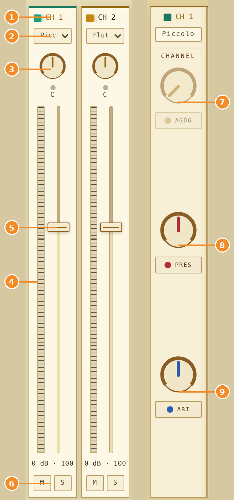
- CH ① : le numéro et la couleur du canal. Un clic le choisit, et il apparaît dans la section CHANNEL à droite.
- L’instrument ② : le même que celui du canal dans le Score ; si vous le changez ici, il change là-bas.
- PAN ③ : où il sonne, plus à gauche ou plus à droite (voir plus bas).
- Le vumètre ④ : il bouge avec ce qui sonne, en direct.
- Le fader ⑤ : le volume du canal. En dessous, il indique combien, en dB et en pourcentage.
- M ⑥ le rend muet (mute) et S le laisse jouer seul (solo).
En haut, IN USE montre seulement les canaux qu’utilise l’œuvre, ou les 32, et NEUTRO remet tout au point de départ : les faders à 0 dB, sans M ni S, et le master à 40 %.
Comment savoir que c’est réussi : pendant que l’œuvre joue, baisser le fader d’un canal rend cet instrument plus doux, et avec S on n’entend que lui.
PAN · où sonne l’instrument
Le bouton PAN ③ place l’instrument devant les haut-parleurs, comme dans un orchestre : les violons à gauche, les violoncelles à droite. C est le centre. La lumière devient rouge vers la gauche et verte vers la droite, comme les feux d’un avion.
Comment savoir que c’est réussi : avec des écouteurs, on entend l’instrument du côté vers lequel vous avez tourné le bouton.
CHANNEL · comment joue le canal choisi
La section CHANNEL montre le canal que vous avez choisi d’un clic sur son CH ①, avec son instrument en haut. Ses trois boutons changent la façon dont joue ce canal. Le bouton lumineux sous chacun l’allume ou l’éteint, et un double clic ramène le bouton à la normale.
- AGÓG ⑦ : la respiration automatique du canal, le petit rubato d’un musicien : OFF, L1 ou L2. C’est le seul réglage enregistré avec l’œuvre.
- PRES ⑧ : le toucher du canal, de −2 à +2 : une attaque plus douce ou plus marquée.
- ART ⑨ : à quel point les articulations du canal ressortent ; 100 est la normale.
Comment savoir que c’est réussi : quand vous bougez PRES pendant que l’œuvre joue, les notes de ce canal entrent plus douces ou plus marquées.
MIC et MASTER · votre micro et le volume de tout
À droite, deux colonnes fixes : MIC, pour votre micro, et MASTER, la sortie de toute la suite.

- ON ① ouvre le micro ; la première fois, le navigateur demande l’autorisation. Low cut ② enlève le grondement des graves (sous 90 Hz), LOW et HIGH ③ montent ou baissent graves et aigus, et REV et ECHO ④ lui donnent de la salle et de l’écho.
- 🎧 ⑥ vous permet de vous entendre pendant que vous jouez, seulement avec des écouteurs : avec des haut-parleurs, le micro s’entend lui-même et siffle. CAL ⑦ mesure combien de temps met votre son à revenir, pour que l’enregistrement sorte aligné. Comment vous enregistrer avec l’accompagnement : MIC et ⏺ REC.
- L·R ⑧ est la balance des haut-parleurs, et REV · ECHO · TONE · WARM ⑨ sont les mêmes boutons que sur le Keyboard : ce que vous bougez ici bouge là-bas.
- Le fader doré ⑩ est le volume total de la suite ; les enregistrements ⬤ wav sortent aussi à ce niveau. MUTE ⑪ coupe tout.
Comment savoir que c’est réussi : quand vous montez le fader doré, tout ce qui sonne monte, et le chiffre en dessous change.
MIC : ① ON · ② pan et Low cut · ③ graves et aigus · ④ réverbération et écho · ⑤ volume · ⑥ écouteurs · ⑦ CAL — MASTER : ⑧ L·R · ⑨ REV, ECHO, TONE, WARM · ⑩ volume total · ⑪ MUTE.
Le transport · jouer et se déplacer depuis la Console
La barre du bas commande l’œuvre du Score à distance, sans aller dans sa fenêtre.

- ⏮ ⏪ ① vont à la première mesure ou à la précédente, et ⏩ ⏭ ④ à la suivante ou à la dernière. ▶ ⏸ ⏹ ② jouent, mettent en pause et arrêtent.
- ⏺ ③ compte 3 · 2 · 1 et vous enregistre avec le micro par-dessus l’accompagnement, dans un WAV ; ⏹ termine et enregistre.
- GO ⑥ : tapez un numéro de mesure et appuyez sur Entrée.
- LOOP ⑦ : ◉ prend la mesure où se trouve l’œuvre, pour A (où elle commence) et pour B (où elle finit) ; 🔁 allume ou éteint la boucle et ✕ l’efface. C’est la même boucle que dans la partition.
- TIME ⑤ et MEASURE · BEAT · BPM ⑧ indiquent où en est l’œuvre et à quel tempo.
Comment savoir que c’est réussi : quand vous appuyez sur ▶ ici, l’œuvre commence à jouer dans le Score et TIME avance.
Lumière, thèmes et navigation
Le soleil/la lune règle la luminosité (double-clic = normal). Quatre thèmes partagés par toute la suite. Les boutons ⊞ ouvrent les autres applications, restent allumés tant qu’elles sont ouvertes, et un clic les ramène au premier plan.
Taille de l’écran
Tout tient le mieux avec Chrome à 90 % et le Score à 80 % (le zoom du Score est dans sa barre d’outils). Pour mettre Chrome à 90 %, cliquez dans l’application et appuyez une fois sur Ctrl − (Ctrl 0 revient à 100 %) ; cela fonctionne aussi dans les fenêtres qu’ouvre le Keyboard, même sans menu. Chrome s’en souvient pour tout le site : faites-le une fois sur votre ordinateur et une fois sur musicmotionsuite.com. Dans la Console, Ctrl + molette sur un bouton rotatif tourne le bouton (le volume), pas le zoom ; utilisez le clavier ou gardez le pointeur hors des boutons.
Le banc d’essai du timbre et du registre. Son guide pas à pas (« comment l’utiliser ») se trouve sur sa page.
Le conseiller.
Il vous accompagne pendant que vous écrivez — seulement si vous le souhaitez. Il parle au bon moment, là où vous travaillez, et garde l’explication longue pour le moment où vous la demandez.
Ouvrir le Coach · l’oreille 🎓 et le bouton ⊞ coach
Le Coach a deux parties : le petit message, qui apparaît là où vous travaillez, et la fenêtre Coach, où l’on lit tranquillement. Les deux se commandent depuis la barre du haut de chaque application.
Pour l’ouvrir : appuyez sur ⊞ coach ② dans la barre du haut du Score, du Keyboard, de la Console ou du Player. La fenêtre Coach s’ouvre à part.

- L’oreille 🎓 ① : un clic la réveille ou l’endort. Réveillée, elle bat doucement en violet : le Coach écoute et vous prévient. Endormie, il ne dit rien. Ce que vous choisissez dans une application vaut pour toutes.
- ⊞ coach ② : ouvre la fenêtre Coach, avec ses onglets (voir La fenêtre Coach).
Comment savoir que c’est réussi : l’oreille bat en violet et la fenêtre Coach s’ouvre avec le salut du Coach.
Qui vous accompagne et la langue · clic droit sur 🎓
Un clic droit sur l’oreille 🎓 ouvre un petit menu avec deux choses : qui vous accompagne et dans quelle langue parle toute la suite.
Pour l’ouvrir : faites un clic droit sur 🎓 ①.

- CHOISIR LE COACH ② : le Suite Coach est patient et vous guide pas à pas même si vous ne connaissez pas la musique. Salieri est le maître exigeant, pour ceux qui savent déjà (voir Étude avancée).
- LANGUE ③ : Español, English, Français, Nederlands ou Deutsch. Elle vaut pour toutes les applications, et les ? ouvrent le guide dans cette langue.
Comment savoir que c’est réussi : la coche ✓ reste sur ce que vous avez choisi, et les textes des applications changent de langue.
Tout le reste, sur la page du Coach
La fenêtre Coach et ses onglets, ce que le Coach vous signale pendant que vous écrivez, le jeu de composition du Niveau 1 et l’étude avancée — contrepoint, harmonie, orchestration et composition — se trouvent sur la page du Coach, qui grandit à chaque version.
L’instrument.
Le seul moteur sonore de la suite : tout ce que vous entendez sonne ici. Trente-cinq hauteurs par octave, un accord pythagoricien pur, et une bande tempérée sur chaque touche pour entendre la différence.
Comment le Keyboard s’accorde · SYSTEM, KEY, MODE et SENS
La première rangée de boutons décide comment sonne chaque touche : avec quel accord, et dans quelle tonalité.

- SYSTEM ① choisit entre trois façons de jouer. 12 TET est le piano tempéré habituel, et sonne sur les bandes cyan des touches. Axiomatic est l’accord pythagoricien pur : chaque touche par son nom. Tonal joue par degrés d’une tonalité : quelqu’un qui ne sait pas jouer du piano joue et compose juste dans n’importe quelle tonalité.
- KEY ② et ALTERATION ③ choisissent la tonique : Sol et ♮ donne Sol, Si et ♭ donne Si♭. Ils ne s’allument qu’en Tonal.
- MODE ④ : M est majeur et m mineur.
- SENS ⑤ indique de combien monte la sensible, la note qui « tire » vers la tonique : 0 pas du tout, +1 la valeur normale (on commence là) et +2 un effet plus marqué, aussi sur les notes chromatiques.
- L’étiquette ⑥ indique où vous êtes : AXIOMATIC, ou la tonalité, comme G♮ MAJOR.
Les touches de votre ordinateur jouent aussi : quelle touche donne quelle note dans chaque système se trouve dans les raccourcis du Keyboard.
Comment savoir que c’est réussi : l’étiquette ⑥ montre ce que vous avez choisi, et en Tonal la rangée du bas du clavier de l’ordinateur (Z X C V B N M) joue la gamme de cette tonalité.
Acord Lab — entendre des accords avec la souris
Avec le clic gauche, vous jouez une note. Un clic droit sur le clavier active le maintien : la note que vous jouez continue de sonner avec sa lumière allumée, et chaque note jouée ensuite avec le clic gauche s’y ajoute. Ainsi vous entendez l’accord complet sans garder plusieurs touches enfoncées. Un autre clic droit éteint tout.
Comment savoir que c’est réussi : les touches de l’accord restent allumées et sonnent ensemble.
La sortie HiFi · le volume et la couleur du son
Sur la deuxième rangée, six boutons rotatifs. On les tourne en glissant vers le haut ou vers le bas, et un double clic les ramène au neutre. La lumière à côté s’allume quand le bouton est utilisé.

- VOL ① : le volume de ce que vous jouez au clavier. Le Score a son propre volume, et le total est le MASTER de la Console.
- REV ② : la réverbération, comme jouer dans une grande salle.
- ECHO ③ : l’écho, la note qui se répète de plus en plus doucement. Il commence éteint.
- TONE ④ : plus sombre ou plus brillant.
- WARM ⑤ : plus chaud, avec un peu plus d’harmoniques.
- BAL ⑥ : la balance, plus à gauche ou plus à droite.
VOL ne concerne que le clavier ; les cinq autres changent tout ce que vous entendez, y compris le Score, et ce sont les mêmes que dans la Console : si vous en bougez un ici, il bouge là-bas.
Comment savoir que c’est réussi : quand vous tournez le bouton, le son change et sa lumière s’allume ; un double clic le remet comme avant.
Enregistrer et le coffre d’enregistrements
Le Keyboard enregistre ce que vous jouez et le garde pour que vous puissiez l’écouter plus tard. Il garde chaque note avec son accord exact, sans MIDI ni quantification : ce qui est rejoué est exactement ce que vous avez joué.
Pour enregistrer : appuyez sur ⏺ ① dans la barre Rec, jouez, puis appuyez sur ⏹ pour terminer. ▶ ② joue l’enregistrement et, pressé à nouveau, le met en pause ; ⏪ et ⏩ sautent de dix secondes en arrière ou en avant, et l’horloge indique le temps à la milliseconde (00.00.000).
Pour ouvrir le coffre : appuyez sur ☰ recs ③, à côté de ♩ pulse et ⊕ FX.

- load mmf et load mid ④ apportent un enregistrement depuis votre ordinateur. Le MIDI entre comme une couche tempérée, en cyan.
- La nouvelle prise ⑤ apparaît en haut, à portée de main : keep in list la garde dans la liste et save as .mmf la télécharge comme fichier.
- La liste ⑦ : écrivez sur le nom pour le changer ; ▶ la joue, ⬇ l’enregistre en .mmf et ✕ la supprime.
- Au bas du coffre se trouvent les démos de Bartók et de Bach, pour essayer.
PLAYBACK TEMPO ⑥ change la vitesse à laquelle un enregistrement est joué, sans changer les notes : elles restent tout aussi justes, seulement plus lentes ou plus rapides. Faites glisser le bouton vers le bas pour aller plus lentement, jusqu’à ×0.50 (la moitié), ou vers le haut pour aller plus vite, jusqu’à ×2.00 (le double). Avec Shift il bouge finement, et un double clic le ramène à ×1.00, la vitesse d’origine.
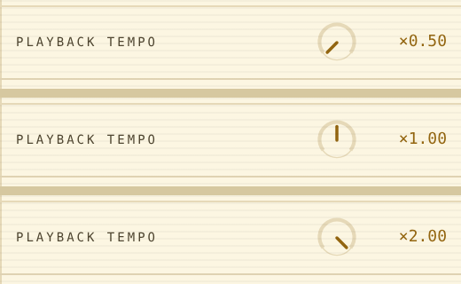
Cela sert à deux choses : enregistrer lentement un passage difficile et l’écouter au tempo, ou écouter une œuvre lentement pour suivre chaque note. Cela vaut pour le ▶ de n’importe quel enregistrement du coffre, y compris les .mmf et .mid que vous chargez. Quand vous appuyez sur ▶, le coffre se ferme ; pour changer la vitesse pendant la lecture, rouvrez-le avec ☰ recs, bougez le bouton et relâchez-le : l’œuvre reprend là où elle en était, à la nouvelle vitesse.
Si vous sautez à une autre danse, le clavier entre accordé dans la tonalité de ce passage. Et vous pouvez enregistrer pendant que le Score joue : la prise sort propre, avec seulement ce que vous avez joué. Pour garder le son comme fichier audio, utilisez ⬤ wav.
Comment savoir que c’est réussi : après ⏹ apparaît « NEW RECORDING READY », et avec ▶ vous entendez ce que vous avez joué. Avec le bouton à ×0.50, cela joue à la moitié de la vitesse, avec le même accord.
♩ Pulse — le métronome du Keyboard
Le Keyboard a son propre métronome, plus complet que celui du Score : ici, c’est vous qui choisissez le tempo, et vous pouvez entendre un clic en plus de voir la lumière.
Pour l’ouvrir : appuyez sur ♩ pulse ① dans la barre du Keyboard.

- La lumière ② bat avec la pulsation, et ▶ start ③ l’allume et l’éteint.
- tap ④ : appuyez plusieurs fois sur ce bouton, au rythme que vous avez en tête, et le métronome prend ce tempo. Les appuis doivent se suivre : s’il passe plus de 2 secondes, il recommence à compter.
- BPM ⑤ : le bouton rotatif et le chiffre ; BPM veut dire battements par minute.
- Le menu ⑥ : les tempos classiques, de Largo · 50 à Presto · 184. Le bouton rotatif, le menu et tap vont ensemble : si vous changez l’un, les autres bougent.
- click ⑦ allume le son ; il démarre éteint, avec la lumière seule. Le bouton d’à côté est son volume, et tone ⑧ le timbre du clic, plus grave ou plus aigu.
Avec le ⊗ épinglé, le métronome continue même si vous faites autre chose ; non épinglé, le fermer l’arrête, ainsi rien ne reste à sonner par oubli. Et il bat avec l’œuvre : quand un .mmf du coffre ou le Score joue —y compris dans une boucle A–B—, la lumière suit la mesure et le chiffre montre le tempo de ce passage. C’est l’œuvre qui commande : quand sa pulsation arrive, le métronome libre s’arrête tout seul.
Comment savoir que c’est réussi : la lumière bat au tempo choisi, et avec click allumé vous l’entendez. Le PULSE du Score est différent : seulement de la lumière, avec le tempo de la partition (voir le Pulse du Score).
La note et l’horizon · ce qui sonne
Sous l’instrument, le Keyboard vous dit quelle note vous venez de jouer.
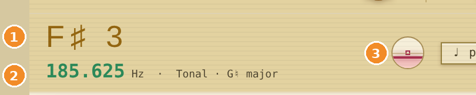
- La note ① : son nom et son octave, comme F♯ 3.
- La fréquence ② : combien de vibrations par seconde (Hz) elle a, exactement, et dans quel système vous êtes.
- L’horizon ③, comme celui d’un avion : avec la ligne au milieu, la note est à sa place pythagoricienne ; elle monte quand la note tire vers le haut (la sensible) et descend quand elle tire vers le bas.
Comment savoir que c’est réussi : quand vous jouez la sensible en Tonal —Fa♯ en Sol majeur—, la ligne de l’horizon monte.
Instrument — comment sonnent les touches du Keyboard
C’est le Keyboard qui fait sonner toute la suite : le Score aussi sonne à travers lui. Instrument choisit comment sonnent les touches quand vous les jouez, avec la souris ou le clavier de l’ordinateur : piano, violon, flûte…
Pour l’ouvrir : appuyez sur le champ Instrument ①, sur la deuxième ligne de la barre. La liste de tous les instruments s’ouvre.
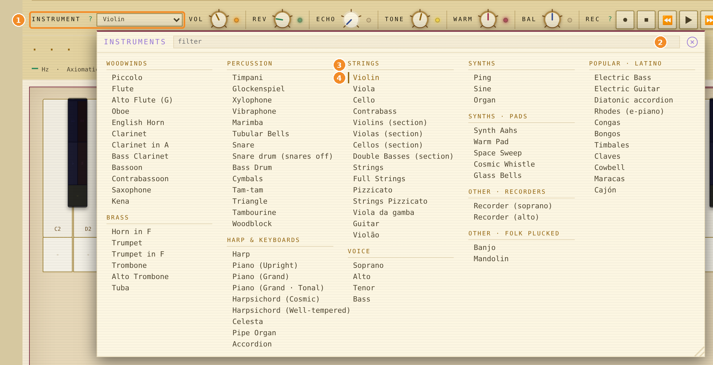
- filter ② : tapez quelques lettres (« vio », « flu ») et il ne reste que les instruments qui les ont dans leur nom.
- Les familles ③ : chaque colonne regroupe les instruments semblables : bois, cuivres, percussions, cordes, voix…
- Cliquez sur l’un d’eux ④ et il est choisi : la liste se ferme et le champ affiche son nom. Celui qui sonne est marqué d’un trait à sa gauche.
Ce que vous choisissez ici ne change pas la partition. Quand le Score joue, chaque note arrive au Keyboard avec l’instrument de son canal, et c’est celui-là que vous entendez (voir L’instrument d’un canal). Par exemple : vous mettez Violin ici et vous appuyez sur ▶ pour une œuvre pour piano. Vous entendez le piano, et si vous jouez par-dessus avec les touches, cela sonne comme un violon. Votre choix est aussi transmis au Register, qui charge le même instrument.
Comment savoir que c’est réussi : le champ affiche le nom que vous avez choisi, et quand vous jouez une touche vous entendez cet instrument.
A= · le diapason de toute la suite
Le diapason est le La sur lequel tout s’accorde. Aujourd’hui c’est presque toujours 440 Hz, mais à d’autres époques et dans d’autres orchestres il était plus grave ou plus aigu.
Pour l’ouvrir : appuyez sur A= 440 ①, en haut à droite. Tuning Reference s’ouvre.
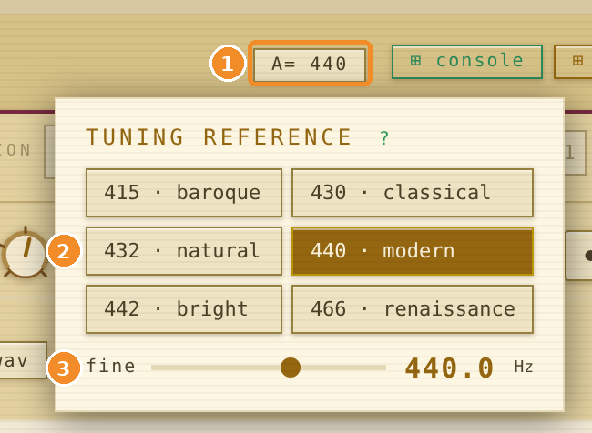
- Les six diapasons ②, à un clic : 415 baroque, 430 classique, 432 naturel, 440 moderne, 442 brillant et 466 renaissance.
- fine ③ : pour une valeur exacte, de 380 à 480 Hz, par demi-hertz.
Changer le La ne transpose pas la musique : toute l’œuvre sonne un peu plus grave ou plus aiguë, et les intervalles restent les mêmes. C’est le même A= que celui du Score : vous pouvez faire jouer une œuvre dans le Score et chercher ici, en écoutant, le diapason de votre instrument ou de votre orchestre. Si vous enregistrez ensuite depuis le Score, le .mmf s’en souvient. Le Pythagorean Tuner a son propre réglage (Reference pitch A4) : si vous accordez votre instrument à 442 avec lui, mettez aussi 442 ici. Plus dans la FAQ.
Comment savoir que c’est réussi : le bouton affiche le nouveau La (par exemple A= 415), et la note suivante que vous jouez sonne déjà avec lui.
Octaves et panique
- OCTAVE SHIFT, en bas de l’écran (◀ ▶, ou les flèches ← → du clavier de l’ordinateur), déplace les touches d’une octave vers le grave ou l’aigu, sans bouger la main.
- Échap (Escape) coupe tout le son d’un coup.
- En Tonal, ↑ et ↓ accordent plus haut ou plus bas la note que vous tenez, en direct.
- Les touches de l’ordinateur comptent par leur place, pas par leur lettre : sur un clavier AZERTY ou QWERTZ, c’est la touche située au même endroit que sur le QWERTY qui sonne.
Comment savoir que c’est réussi : quand vous appuyez sur ▶, le chiffre d’OCTAVE SHIFT change et la même touche sonne une octave plus haut.
La tonalité du Keyboard suit l’œuvre
Quand une œuvre joue depuis le Score ou depuis le coffre, le Keyboard change tout seul de tonalité pour l’accompagner, et l’étiquette du haut indique laquelle. Si l’œuvre a plusieurs pièces dans des tonalités différentes, il change en passant de l’une à l’autre.
Un détail : la partition ne donne que l’armure, et une même armure sert à deux tonalités (Si♭ majeur et sol mineur ont les mêmes bémols). Si l’œuvre ne dit pas laquelle, le Keyboard prend la majeure. Les œuvres de la suite qui ont leur fiche avec la tonalité de chaque pièce affichent la tonalité exacte, comme « fa mineur ».
Comment savoir que c’est réussi : pendant que l’œuvre joue, l’étiquette de la tonalité change quand la pièce change.
⬤ wav — garder en audio ce que vous entendez
⬤ wav enregistre dans un fichier audio (.wav) tout ce qui sonne dans la suite : ce que vous jouez sur le Keyboard, un enregistrement du coffre ou une œuvre du Score. Le fichier s’ouvre sur n’importe quel ordinateur ou téléphone, et sert à l’envoyer ou à garder le souvenir d’une leçon.
Pour enregistrer : jouez d’abord une note, car l’audio doit être en marche (sinon, le Keyboard vous le demande). Le bouton est à côté de ♩ pulse, ⊕ FX et ☰ recs.
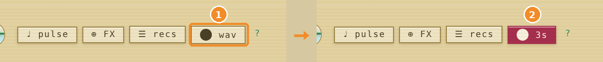
- Appuyez sur ⬤ wav ①. À partir de ce moment, il enregistre tout ce qui sonne.
- Jouez, ou lancez un enregistrement ou l’œuvre. Le bouton ② devient rouge et compte les secondes.
- Appuyez de nouveau sur le bouton pour terminer. Le fichier se télécharge tout seul dans le dossier de téléchargements de votre navigateur (Downloads), avec un nom comme mm-capture-153012.wav : l’heure à laquelle vous avez terminé.
Il enregistre ce que vous entendez, tel que vous l’entendez. Si vous bougez quelque chose dans la Console pendant l’enregistrement —le MASTER, les faders, le pan, la réverbération—, cela se retrouve dans le fichier ; si le MASTER est à 20 %, le fichier sort à 20 %. Avant d’enregistrer, réglez le volume comme vous voulez qu’il sonne.
Depuis le Score, on fait la même chose avec File → SAVE AS WAV : il joue l’œuvre, ou le passage marqué avec SELECT, et télécharge le fichier au nom de l’œuvre.
Pour les curieux : ce n’est pas un mixage calculé après coup, mais ce qui part vers les haut-parleurs à ce moment-là, en stéréo et en 24 bits. C’est pourquoi il garde aussi un clic ou un frottement, s’il y en a eu.
Comment savoir que c’est réussi : pendant l’enregistrement, le bouton est rouge et les secondes avancent ; à la fin, le fichier .wav apparaît dans Downloads, et en l’ouvrant vous entendez ce qui a sonné.
⊕ FX · réverbération, écho, porta et rotary pour ce que vous jouez
Pour l’ouvrir : appuyez sur ⊕ FX ①, à côté de ♩ pulse. En haut s’affiche l’instrument du canal sur lequel vous jouez : les effets sont ceux de ce canal.
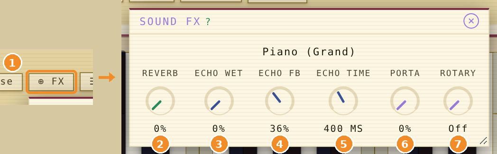
- Reverb ② : la résonance d’une grande salle.
- Echo wet ③ : la quantité d’écho que l’on entend ; Echo fb ④ : combien de fois il se répète ; Echo time ⑤ : combien de temps dure chaque répétition, en millisecondes.
- Porta ⑥ : la note glisse jusqu’à la suivante, comme un violon ou une voix.
- Rotary ⑦ : le haut-parleur rotatif de l’orgue de jazz. À 0 il est éteint ; en le tournant, il va de lent à rapide. Double clic : Off.
Ces effets changent seulement ce que vous jouez en direct. Pour que la partition sonne avec réverbération ou écho, on les écrit dans le Score, dans son propre Sound FX (voir Sound FX). Et il ne faut pas les confondre avec REV et ECHO de la barre, qui valent pour tout ce qui sonne. Le popup reste ouvert (⊗) jusqu’à ce que vous le fermiez, et se déplace par son en-tête.
Comment savoir que c’est réussi : quand vous jouez avec Reverb ou Echo wet montés, vous entendez la salle ou l’écho ; la partition, quand elle joue, ne change pas.
La partition.
Vous écrivez la musique par canaux avec le mini-keyboard en mode TODAL : vous jouez par degrés de la tonalité. Il ne produit aucun son par lui-même — c’est le Keyboard qui le génère.
Voir la courbe avant de l’entendre · Peak/Valley · Mirror · la respiration
L’éditeur de liaison et l’éditeur du signe de note affichent désormais un dessin en direct de la courbe du geste, entre deux lignes : Peak (le plus plein) en haut et Valley (le plus ténu) en bas. Le dégradé va du sarcelle (plein) au doré (ténu), comme sur la portée. Si la liaison n’a pas encore de Peak/Valley propres, la courbe est dessinée en pointillés avec une étiquette « auto » : elle vous montre la profondeur que le programme choisit de lui-même. La forme est une courbe lisse (une messa est une bosse arrondie, pas un triangle). Peak et Valley sont relatifs à la nuance, et non des niveaux fixes : un > depuis mf et un > depuis ff ne sont pas identiques — la nuance gouverne et le geste ne saute jamais à une valeur absolue. La respiration : l’ampleur du gonflement se mesure aux secondes réelles de la phrase et à la quantité d’air que porte la nuance, si bien qu’une liaison courte et rapide ne « pompe » pas et qu’un mf sur une longue phrase reste plein. Le Mirror de l’éditeur de liaison inverse aussi désormais la forme (éclosion ↔ extinction, messa ↔ inverse), en plus du côté de l’arc et de la hauteur.
Ce qu’est le geste de la liaison. La même idée que le geste de la note, mais sur toute la phrase : la courbe va de la première note de l’arc à la dernière, et chaque note prend le niveau qui tombe à sa place. Les formes sont les mêmes ; sost garde la phrase égale. nun et unu ne sont pas des courbes : ils marquent l’attaque de chaque paire de notes et laissent le niveau plat. Si vous voulez en plus qu’une note de l’arc fasse quelque chose à elle, donnez-lui son geste de note : les deux s’additionnent.
Écrivez-le dans votre propre langue · le ? du mot et le lien
L’encre vous appartient : le champ de texte de la fenêtre EXPR ne filtre rien et accepte le mot dans la langue où vous l’écrivez, c’est la règle du papier. Ce qui sonne est une autre affaire — le moteur le résout en un terme canonique, c’est pourquoi doux, zart et sanft sonnaient déjà comme dolce sans que la partition change une lettre.
Vous pouvez désormais le faire avec n’importe quel mot, et vous le voyez avant de l’insérer. À côté de la ligne bleue d’aperçu se trouve un ? : il vous dit ce que fait ce mot — le lemme vers lequel il se résout, le groupe (sound · tempo · dynamics · instrument), l’axe s’il en a un, et le State. Fini d’insérer, regarder et supprimer.
Et si le State indique silent, une ligne apparaît en dessous : behaves like — choisissez le terme auquel il ressemble et, dès lors, votre mot sonne comme lui, l’encre restant intacte. Vous ne choisissez pas la famille : elle vient du terme que vous avez choisi. Mit Schwung relié à dolce affiche « Lemma dolce (mit schwung) · Group sound · Axis IN ».
Le lien vit dans trois couches, et la plus proche l’emporte. La pièce : il voyage à l’intérieur du .mmf, si bien que le fichier sonne de la même façon sur la machine de quelqu’un d’autre. Votre dictionnaire : la case à cocher « and in my other pieces » l’enregistre sur cet ordinateur et s’applique à tout ce que vous ouvrez ; la décocher l’en retire et le laisse uniquement dans la pièce. Et le lexique de la suite, qui est le socle et ne s’écrit pas depuis l’application.
Agogique de phrase (ASYM AGOG) : le soliste joue, la grille ne bouge pas
L’agogique que vous connaissiez déjà infléchit une note. Celle-ci façonne le temps de tout un passage : en mode SELECT, vous fermez une sélection sur un canal, clic droit, et vous choisissez ⌘ ASYM AGOG. À l’intérieur de la région, les attaques de ce canal avancent et retiennent tandis que l’accompagnement reste sur sa grille — le tempo n’est jamais touché, et un canal sans région ne bouge pas d’une microseconde. C’est le rubato au sens ancien : la harpe poursuit inexorablement et la basse joue avec la phrase. Vous choisissez l’une des quatre phases, qui sont la forme de la courbe — Inhale prend de l’air à l’entrée puis revient · Move pousse dans le corps de la phrase et rend à la fin · Arrive prend au milieu et élargit le point d’arrivée · Exhale se détend après le sommet —, plus Flat, qui n’est pas une courbe mais la grille elle-même : la ligne reste à zéro et l’on n’entend que ce que vous déplacez à la main, et c’est ainsi que s’écrit une valse. π⁻¹ la renverse en miroir. Avec l’une des quatre premières, la phrase quitte la grille puis la rejoint : elle commence et finit à zéro.
L’AXIS de la région indique ce que gradue cette courbe, et ce sont trois choses différentes d’une même note : Tempo, quand elle entre ; Pres, avec quoi elle entre — la présence de l’attaque — ; et ART, combien de temps elle dure et avec quel poids. Chaque axe garde sa propre courbe sur le même passage, et la couleur de la bande indique laquelle vous regardez : vert citron, bleu sarcelle, lavande.
Dans le dessin de la fenêtre, chaque point est une note : faites-en glisser un et vous ajustez cette seule note, la phase restant intacte. Les flèches passent de note en note et les +/− affinent ; sur l’axe ART, les points creux sont des notes sans articulation écrite, où il n’y a rien à moduler. Les pastilles de canal indiquent qui elle atteint — une phrase que jouent les deux violons est une région qui atteint les deux — et dès qu’elle a un nom, la région devient un motif : vous l’emmenez sur un autre passage avec Take · from M to M, et vous masquez ou supprimez d’un coup toutes les régions qui portent ce nom.
INT indique l’ampleur, en fraction de temps et non de la note — si bien qu’une blanche et une croche du même passage se déplacent de façon comparable, ce qui correspond à la sensation. Subtle ne fait qu’esquisser ; Expressive est le juste milieu ; Extreme s’entend comme une liberté. La région ne fait que déplacer : la grille ne bouge pas, le passage dure exactement ce qui est écrit et la phrase rejoint la grille d’elle-même, si bien que cela fonctionne avec l’orchestre qui joue. Là où vous avez déjà placé un signe agogique par note, c’est celui-ci qui l’emporte ; et à l’intérieur de la région, l’agogique automatique se tait, parce que là, c’est vous qui l’avez déclarée. Le bouton ? de la fenêtre ouvre l’explication complète dans la langue que vous avez choisie. Et dès aujourd’hui, la région voyage à l’intérieur du .mmf : auparavant, elle ne vivait que dans l’onglet et se perdait au rechargement.
Les changements de chaque version — ce qui est nouveau et ce qui a été corrigé — se trouvent à part, sur la page Nouveautés.
La présentation complète des fonctions se trouve sur sa page.
La corde frottée.
Un laboratoire, pas encore une application de la suite : une corde physique que l’archet accroche et relâche. Il s’ouvre, se mesure lui-même (le test de contrôle) et ensuite vous écoutez. Un seul fichier, rien à installer.
Les réglages
Bow speed en cm/s : positive vers la pointe (⊓), négative vers le talon (V). Weight en N sur la corde (1 N ≈ 100 g), et non le poids propre de l’archet. Contact point β, fraction de la longueur depuis le chevalet, avec sa zone écrite en toutes lettres (ponticello · ordinario · tasto) et les cm. Angle of attack, l’horloge des crins : 12:00 à plat ; 11:30 et 12:30, selon le sens, donnent l’entrée sans attaque ou la morsure. Knobs: run laisse sonner ce que vous avez réglé ; chaque bouton de coup d’archet les déplace de lui-même pendant qu’il sonne.
La corde
Sélecteur Instrument (violon · alto · violoncelle · contrebasse) et string ; au-dessus, vous lisez la note, les Hz et le rapport pythagoricien par rapport au La 440 (ré du violoncelle = 1/3, do = 4/27). Provisional body : sept résonances fixes pour ne pas entendre le chevalet nu ; désactivez-le pour entendre la corde seule. Mute : aucune, orchestre (~3 g) ou étude (~30 g).
Les boutons de coup d’archet
Par famille. Strokes: Détaché · No attack · Martelé · Staccato · Spiccato · Sautillé 3+1 · Tremolo. Colour: Flautato · Tasto · Ponticello · Light bow. Finger: Pizz · Fast pizz (là, les réglages s’appellent vitesse du doigt, force et point). Sous les boutons, une ligne indique ce que fait le geste ; le graphique montre les quatre courbes et l’enveloppe du son. Clear efface le graphique.
Le simulateur et le test de contrôle
Le simulateur de toucher montre la corde vue d’en haut, l’archet selon son angle et les crins qui passent ; l’anneau est le son (rayon = niveau, rugosité = brillance) et sa couleur indique le régime : sarcelle, son propre ; violet, sifflements ; rose, grincements ; doré, la corde sonne d’elle-même. Avec un son propre, il écrit la f₀ qui sonne et son écart en cents. La fiche de verdict résume le test de contrôle — "16/23 green · 7 pending" — : vert, c’est respecté ; rouge, c’est enfreint ; en attente, c’est une physique qui manque encore et qui est déclarée. Le tableau en dessous contient chaque ligne avec sa mesure et son seuil.
Ce qui entoure la partition.
En haut, ce qui s’applique à toute la suite : le thème, la luminosité de l’écran, le volume général et la manière de lire les instruments transpositeurs. En bas, le transport et les quatre nombres que l’on peut modifier. Et entre les deux, la partition, avec ses gestes à la souris et au clavier — ceux que personne ne devine et qui font toute la différence.
Sur la barre du haut
Les quatre thèmes · et ils appartiennent à toute la suite
Les quatre cercles de la barre sont Dark, Gray, Clear et High Contrast. Le choix n’appartient pas au Score : il est enregistré en un seul endroit et chaque application le reprend, si bien que le Keyboard, la Console et le Player s’ouvrent dans le thème que vous avez choisi ici. Clear est le thème pour la lumière du jour ou pour montrer votre écran à quelqu’un ; High Contrast est là pour une lecture sans effort.
Le réglage de luminosité · l’écran dans cette pièce
Il ne change pas le thème : il ajuste l’écran par-dessus le thème que vous avez déjà. Il se fait glisser ↕, la molette le déplace par pas, et un double-clic le ramène à zéro. Dans les thèmes sombres, il éclaircit — l’icône devient un soleil — et dans le thème clair, il assombrit — un croissant de lune —, car le problème est inverse dans chaque cas. Il vous accompagne : réglez-le dans le Score et le Keyboard s’aligne aussitôt.
Le Vol de la barre est le volume de ce qu’envoie le Score
Ce n’est pas le volume d’un canal, ni le volume général : c’est le volume de ce que le Score envoie pour être joué. Il se fait glisser ↕ ou se règle à la molette, et démarre à 40 %. Il vaut la peine de savoir pourquoi : le Score n’a pas de son — il envoie la valeur et le Cosmic Keyboard, qui est le moteur, l’applique aux notes qui viennent du Score. Il y a trois boutons de volume dans la suite et chacun commande le sien : celui-ci le Score, le VOL du Keyboard ce que vous jouez sur les touches, et le MASTER de la Console l’ensemble (c’est ce qu’enregistre SAVE AS WAV). Ainsi, avec le Score en lecture, vous pouvez baisser le Score et répéter par-dessus avec le clavier à plein volume, ou l’inverse. Le volume d’un canal se trouve sur la fiche du canal actif et dans la Console.
WRITTEN · CONCERT · lire la partie, ou lire la pièce
C’est l’interrupteur des instruments transpositeurs, et il ne change que ce qui est dessiné : pas une note ne bouge, et le son ne change pas. En WRITTEN — l’état à l’ouverture du Score — chaque canal transpositeur s’affiche à sa hauteur écrite, et son armure se décale du même intervalle : le cor en Fa montre ses dièses, comme sur le pupitre du corniste. Un clic et il devient CONCERT, le bouton se remplissant de bordeaux : tout se dessine en son réel, et c’est ainsi qu’il faut le regarder pour vérifier une harmonie. L’intervalle vient de l’instrument du canal — le piccolo une octave, la clarinette un ton, le cor une quinte, la contrebasse et la guitare une octave, le glockenspiel deux —, si bien que rien ne bouge dans les violons, les altos et les violoncelles, et qu’un canal sans instrument ne bouge pas non plus.
La feuille — travailler dessus, ou la mettre sur papier.
📄 PAGE / ▦ SCROLL · la bande ou la feuille
Le Score vous montre la musique de deux façons. En SCROLL, c’est une longue bande qui défile vers la droite : la plus commode pour écrire. En PAGE, vous la voyez sur des feuilles, telle qu’elle sera imprimée, et c’est là que vous décidez comment elle se répartit sur les pages.
Pour l’ouvrir : appuyez sur 📄 PAGE ①. Le même bouton affiche alors ▦ SCROLL : appuyez dessus pour revenir à la bande. La bande ne change pas : elle vous attend telle quelle.

- La vue ② : Full page (la feuille entière), Fit width (à la largeur de l’écran) ou Side by side (deux feuilles, comme un livre ouvert).
- Bars/sys ③ : combien de mesures tiennent sur chaque ligne (en musique, un système). Auto les ajuste à la largeur ; ou vous choisissez de 1 à 9.
- Staff ④ : la taille de la portée, en millimètres de papier, de 3 à 9. Pour une partie jouée au pupitre, 7 mm ; pour une partition de nombreux instruments, 4 ou 5.
- Gap ⑤ : l’espace entre une ligne et la suivante.
- Pages ⑥ : sur combien de feuilles vous voulez l’œuvre. Le Score l’arrange tout seul ; si elle ne tient pas, il vous indique le nombre minimum possible.
On continue à travailler sur la feuille : un clic place le curseur ou sélectionne une note, on fait glisser les notes et les signes, on sélectionne une zone, et le clic droit ouvre les mêmes menus que sur la bande. Quand vous appuyez sur ▶, les notes qui sonnent s’allument sur la feuille. Le zoom se fait avec Ctrl + molette. Pour écrire beaucoup, la bande est plus commode.
Ces réglages sont enregistrés avec l’œuvre et sont les mêmes que ceux de la feuille d’impression (PRINT / PDF) : ce que vous arrangez ici sort ainsi sur le papier. Si une ligne a une mesure de trop ou de moins, le clic droit sur cette ligne permet de la déplacer ou de lui passer une mesure (voir ⠿ Système).
Comment savoir que c’est réussi : vous voyez l’œuvre sur des feuilles blanches, comme un livre, et quand vous changez ③ ou ⑥, la feuille se réorganise aussitôt.
🖨 PRINT / PDF · imprimer la partition ou l’enregistrer en PDF
Pour l’ouvrir : appuyez sur MENU FILES ① puis sur 🖨 PRINT / PDF ②. La feuille d’impression s’ouvre : les pages telles qu’elles sortiront, avec leur barre de réglages en haut.


- Show ③ : Full score, la partition complète, ou Selected CH, seulement les canaux choisis (la partie d’un instrument ; voir plus bas).
- Paper ④ : A4, Letter ou A3.
- Bars/system, Staff mm, Sys gap et Pages ⑤ : les mêmes réglages que dans PAGE, et ils vont ensemble : ce que vous changez ici change là-bas.
- Print / PDF ⑥ ouvre la fenêtre d’impression de votre navigateur. Choisissez votre imprimante, ou dans Destination choisissez Save as PDF pour enregistrer un fichier PDF.
- Close ⑦ revient à la partition.
- PAGE HEADER · print only ⑧ : le titre, le sous-titre, le compositeur, le nom de la partie et le ©, chacun avec sa taille. Ils ne changent que le papier : si vous laissez un champ vide, c’est celui de Score Info qui est utilisé. Sur la page 1, vous pouvez attraper l’en-tête avec la souris et le déplacer.
Ce que vous voyez sur la feuille d’impression est ce qui sort : sans la sélection cyan, sans les boutons et sans les notes cachées. Sous la barre, Footer et Page # ajoutent ou enlèvent le pied de page et le numéro de page.
Si vous avez ouvert l’œuvre depuis une leçon, en mode démo, c’est plus court : le bouton 🖨 PRINT en haut, à côté du titre, prépare la feuille et ouvre directement la fenêtre d’impression.
Comment savoir que c’est réussi : la fenêtre d’impression du navigateur s’ouvre et montre vos feuilles ; avec Save as PDF, le fichier arrive dans Downloads.
Et la partie d’un instrument sort du Panel
Le 🖨 PRINT VIEW du Panel ouvre cette même feuille d’impression, mais avec Show déjà réglé sur « canaux sélectionnés » : ceux de vos pastilles. C’est le chemin court vers les parties séparées — choisissez l’instrument dans le Panel, appuyez sur PRINT VIEW et imprimez. Depuis MENU FILES, vous pouvez faire la même chose en changeant Show à la main.
La barre du bas — le transport et les nombres de la pièce.
La barre du bas · ce qu’elle vous dit et ce que vous pouvez changer
Tout en bas se trouve la barre de transport. Elle vous dit où vous êtes dans l’œuvre, pendant que vous écrivez et pendant qu’elle joue.

Une règle simple pour la lire : ce qui est dans un cadre se change d’un clic ; ce qui n’a pas de cadre vous informe seulement.
- TIME ① : le temps écoulé depuis le début, en minutes, secondes et millièmes.
- MEASURE · BEAT · SUBDIV · BPM ② : la mesure, le temps dans la mesure, la taille du pas du curseur et la vitesse. Ils ont un cadre : vous pouvez les changer. Comment, dans les quatre puces.
- PITCH ③ : la hauteur de la dernière touche que vous avez jouée.
- CURSOR ④ : sur quel instrument se trouve le curseur.
Comment savoir que c’est réussi : appuyez sur ▶ et regardez TIME : les chiffres défilent. Pendant que l’œuvre joue, TOTAL apparaît à côté : la durée de toute l’œuvre.
Les quatre pastilles · MEASURE, BEAT, SUBDIV, BPM
MEASURE et BEAT servent à aller : un clic les transforme en petite case, vous tapez le nombre et Entrée y amène le curseur (Échap annule). Avec la numérotation par mouvement, MEASURE indique aussi dans quel mouvement vous êtes et quelle mesure c’est à l’intérieur de celui-ci. SUBDIV a sa propre rubrique, juste en dessous : c’est le pas du curseur. BPM n’est pas le tempo de la pièce : c’est celui qui est en vigueur dans la mesure où vous êtes, si bien qu’il change de lui-même quand vous passez un changement de tempo ; un clic et vous le tapez, entre 20 et 320.
SUBDIV · de 1 à 8, et c’est le pas avec lequel avance le curseur
C’est le nombre le plus utile de la barre et le moins compris. SUBDIV divise le temps en 1 à 8 parties — 1 la noire, 2 la croche, 3 le triolet de croches, 4 la double croche, et ainsi de suite jusqu’à la triple croche — et de lui découle tout ce qui se déplace par pas : les flèches ← → déplacent le curseur d’exactement un de ces pas, ce que vous faites glisser se pose sur cette grille quand vous le lâchez, la sélection que vous déplacez s’y aimante, et le voyant PULSE bat avec lui et vous nomme la valeur. Si vous voulez écrire à contretemps, SUBDIV 2 place le curseur au milieu du temps d’une seule flèche ; pour un triolet, 3. On règle 3 pour ce qui n’existe pas en 2 : la grille binaire et la grille ternaire ne sont pas les mêmes, et c’est la pastille qui choisit dans laquelle vous êtes. À l’ouverture d’une pièce, le Score le déduit de la musique — la division la plus fine qui explique ce qui est écrit, jamais moins de 2 pour que vous puissiez toujours entrer à contretemps — et vous signale si une note est tombée hors de cette grille, sans rien toucher. Changer l’indication de mesure le réajuste. Et il n’a rien à voir avec la subdivision de l’agogique, qui est une autre chose et se trouve dans sa propre fenêtre.
Les trois qui ne font qu’informer · TIME, PITCH, CURSOR
TIME est l’endroit où se trouve l’aiguille, en minutes et millièmes ; à la lecture, TOTAL apparaît à côté, la durée de la pièce dépliée — avec ses reprises, et non le compte du papier. PITCH est la hauteur pythagoricienne de la dernière touche que vous avez jouée, avec son écart : la petite fenêtre par laquelle se montre l’accord réel. CURSOR indique où vous écrivez : canal, instrument et abréviation, ou l’orchestre entier si le curseur est sur ALL.
Les boutons pour écouter · jouer, arrêter et se déplacer
À gauche de la barre du bas se trouvent les boutons pour écouter l’œuvre, comme sur n’importe quel lecteur de musique.

- ⏮ revient au début de l’œuvre. Si vous avez délimité une plage de travail, au début de la plage.
- ⏪ recule d’une mesure.
- ▶ joue l’œuvre à partir de l’endroit où vous êtes. Raccourci : la barre d’espace.
- ⏸ fait une pause. Un autre clic reprend au même endroit.
- ⏹ arrête.
- ⏩ avance d’une mesure.
- ⏭ va à la fin de l’œuvre.
- ♩ PULSE allume le métronome. Il ne choisit pas le tempo : il le lit dans la partition.
- 🔁 LOOP répète un passage encore et encore. Comment délimiter le passage, dans la boucle.
Attention : le son est produit par le Keyboard. S’il n’est pas ouvert, ▶ fait avancer la tête de lecture mais vous n’entendez rien.
Comment savoir que c’est réussi : quand vous appuyez sur ▶, vous entendez la musique, une ligne parcourt la partition et TIME défile dans la barre du bas.
La bande de navigation — trouver un passage, et s’y enfermer.
La bande de navigation · une carte quand vous voyez tout, une règle quand vous êtes à l’intérieur
La bande au-dessus de la portée change de nature avec le zoom : avec toute la pièce en vue, c’est une carte — chaque mesure occupe la même largeur — et quand vous êtes à l’intérieur d’un passage, elle devient une règle, où chaque repère tombe exactement sur sa barre de mesure. Un clic vous amène à cette mesure, et faire glisser en maintenant le bouton fait défiler la lecture au fil du mouvement. Le survol vous indique de quelle mesure il s’agit, et sur un repère, de quel repère.
A et B se marquent d’un clic droit sur la bande
C’est le geste que personne ne devine : clic droit sur la bande, sur la mesure voulue, et le menu propose ▼A Loop Start et ▼B Loop End avec le numéro de cette mesure. Une fois les deux posés, la boucle s’active d’elle-même. Chaque triangle se fait glisser pour ajuster le passage, et un clic droit sur un triangle le supprime. La boucle se répète sans compter les tours, et le saut de B à A est immédiat — les respirations sur les barres de mesure à l’intérieur du passage sont respectées. Le moteur vous fait boucler, mais ne vous y emmène pas : ce qui vous conduit à A, c’est « play the loop », dans le clic droit du bouton LOOP.
Et la bande peut recevoir des étiquettes
Dans le même menu de la bande se trouve Mark section : vous donnez une étiquette à cette mesure — A, B, Coda, ce que vous utilisez — et elle reste écrite sur la bande, pour que vous puissiez y revenir d’un coup d’œil. Ce sont des étiquettes de travail, et non les repères de répétition qui s’impriment : ceux-ci se génèrent depuis la fenêtre TEXT.
La boucle n’est pas la plage de travail
On les confond, et ce sont des contraires. La boucle relève du son : elle répète un passage à la lecture. La plage de travail — clic droit sur la pastille MEASURE — relève de la navigation, et elle sert à une chose très concrète : quand vous corrigez les mesures 40 à 60, ⏮ vous amène à 40 et non à 1, ⏭ à 60 et non à la fin, et ⏪ ⏩ restent à l’intérieur. Les deux boutons d’extrémité passent au sarcelle pour vous rappeler qu’une plage est définie. Dans le petit panneau, vous saisissez From et To — il reste épinglé jusqu’à ce que vous le fermiez, et il se déplace —, et ✕ Clear range vous rend toute la pièce. Elle ne masque rien, ne supprime rien et ne touche pas à la lecture : ▶ joue toujours toute la pièce. Pour travailler un passage, le plus naturel est de définir les deux : la plage pour vous déplacer, la boucle pour l’écouter.
Les canaux — voir, entendre, et qui gouverne quoi.
Voir un canal ou non · la case et l’œil
Dans la liste des canaux (bouton ⚙ CHANNELS), chaque ligne a deux commandes pour l’affichage. Elles font des choses différentes.

- La case ① : décochée, la portée disparaît de l’écran et les autres se rapprochent. Le canal existe toujours, donc il sonne toujours.
- L’œil 👁 ② : rend la portée très pâle, presque transparente. Cela sert à la garder sous les yeux comme référence pendant que vous écrivez sur une autre.
- FX ④ ouvre les effets sonores du canal : réverbération, écho et autres. Ils sont expliqués dans Sound FX. Si le canal a déjà des effets, FX s’affiche en vert.
Pour couper le son d’un canal, il y a ③ : c’est expliqué dans Entendre un canal ou non.
Comment savoir que c’est réussi : avec la case décochée, vous ne voyez plus cette portée ; avec l’œil, vous la voyez pâle. Un clic de plus et elle revient comme avant.
Attention : avec la case décochée, l’œil et la coupure du son de cette ligne ne font rien. Cochez d’abord la case à nouveau.
Entendre un canal ou non · couper le son ne cache pas
Couper le son (en anglais mute) fait taire un canal mais le laisse visible. Cela sert, par exemple, à écouter le piano sans la main gauche.
Pour couper le son d’un canal, utilisez l’un de ces trois moyens :
- le bouton ◉ de sa ligne dans la liste ⚙ CHANNELS (le ③ de l’image ci-dessus) ;
- le ◉ de la fiche du canal actif, en bas à droite ;
- clic droit sur le nom du canal, à gauche de la portée, puis Mute (voir l’image du solo).
Voir et entendre sont deux choses séparées : cacher une portée ne la fait pas taire, et la faire taire ne la cache pas.
Comment savoir que c’est réussi : le nom du canal devient gris, et quand vous jouez l’œuvre, cette portée ne sonne pas. Le même bouton la rallume.
La coupure du son est enregistrée avec l’œuvre : quand vous rouvrez le fichier, les canaux que vous aviez fait taire restent muets.
Écouter un canal seul · Solo
Solo fait le contraire de couper le son : il fait taire tous les autres canaux et ne laisse jouer que celui-ci. Cela sert à écouter une voix sans le reste.
Pour l’utiliser :
- Faites un clic droit sur le nom du canal, à gauche de la portée (par exemple « CH1 · R.H. »). Son menu s’ouvre.
- Choisissez Solo ②.
- Pour tout réentendre, ouvrez le même menu et éteignez Solo.

Si la portée porte deux canaux à la fois (par exemple deux voix), Solo laisse jouer les deux : c’est pourquoi le menu peut afficher « Solo CH1+CH3 ».
Comment savoir que c’est réussi : quand vous jouez l’œuvre, vous n’entendez que cette portée. Quand vous éteignez Solo, chaque canal revient exactement comme avant, y compris ceux que vous aviez déjà fait taire.
Solo n’est pas enregistré avec l’œuvre : c’est une aide pendant le travail.
L’instrument d’un canal · choisir qui joue
Chaque portée de la partition est un canal, et chaque canal a son instrument : piano, violon, flûte… L’instrument décide comment sonne cette portée.
Pour le choisir :
- Appuyez sur le bouton ⚙ CHANNELS, en haut. La liste des canaux s’ouvre.
- Dans la ligne du canal, cliquez sur le menu déroulant de l’instrument ①. La palette s’ouvre avec tous les instruments, par famille.
- Cliquez sur l’instrument que vous voulez ②. Si vous connaissez son nom, tapez-le dans filter et la palette ne montre que ceux qui correspondent.

Vous pouvez aussi le choisir sans ouvrir CHANNELS : dans la fiche du canal actif, en bas à droite, il y a le même menu déroulant, qui ouvre la même palette.
Choisir un instrument fait trois choses : cela donne son nom au canal, lui donne sa place dans l’orchestre (de quel côté il sonne et à quel volume) et peut changer la clé. Une contrebasse, par exemple, s’écrit en clé de fa.
Comment savoir que c’est réussi : le nom de l’instrument apparaît dans la ligne du canal et dans la fiche du bas, et quand vous jouez l’œuvre, cette portée sonne avec le nouvel instrument.
Attention : en passant la souris, le menu déroulant peut afficher « Instrument (cosmetic) ». C’est un ancien avis : l’instrument change bien le son. Avec List, en bas de la liste, vous chargez une banque d’instruments préparée dans le Register au lieu de celle d’usine.
La liste des instruments parle votre langue
La liste sortait autrefois mélangée : certains noms en anglais, d’autres en espagnol, avec les titres des familles toujours en anglais. Désormais, toute la liste — et les onze titres de familles : Woodwinds, Brass, Percussion, Harp & Keyboards, Strings, Voice, Synths, Other, Popular · Latino — parle la langue que vous avez choisie. Cela vaut aux quatre endroits où elle apparaît : le champ Instrument de la fiche du canal et le petit sélecteur de chaque ligne de la fenêtre CHANNELS dans le Score, le sélecteur du Cosmic Keyboard, ceux du Register Simulator et de la Console, ainsi que dans la palette en colonnes.
La langue est celle de toute la suite : vous la choisissez une seule fois, dans la barre des langues du Coach (deuxième ligne, à côté de l’onglet COACH), dans Preferences → Language du Score ou par un clic droit sur COACH dans n’importe quelle application ; l’anglais par défaut. Il y en a cinq : ES · EN · FR · NL · DE. En français, en néerlandais ou en allemand, les ? ouvrent ce guide dans cette langue ; les six applications (Score, Keyboard, Coach, Console, Player et Register) parlent cette langue : infobulles, messages et aides ; les noms des boutons restent en anglais, comme dans toute la suite. Si vous changez de langue avec les applications ouvertes, toutes changent aussitôt, sans recharger. Ce que vous voyez change ; ce que le fichier enregistre, non : chaque instrument a un nom interne qui n’est jamais traduit, de sorte qu’un .mmf ouvert sur l’ordinateur de quelqu’un d’autre, avec l’autre langue choisie, sonne exactement pareil. Un détail : si vous changez de langue en cours de session, la palette en colonnes affiche aussitôt la nouvelle langue, et la petite liste déroulante de chaque ligne se met à jour la prochaine fois que cette liste est redessinée.
Dans la même passe, les textes et infobulles encore en espagnol alors que l’anglais était choisi ont été mis à jour : « The game count », le bouton Unfold ⇥, les infobulles des cases de dernière mesure et de taille en px, celle des pastilles Ex. et celle de l’épingle de la fenêtre BARLINES ; dans le Cosmic Keyboard, les deux infobulles du bouton Pulse ; dans le Register Simulator, l’étiquette « term » du Lexicon et l’infobulle de 🎓. Ce qui reste en espagnol, en toute franchise : le Coach et le Player sont entièrement écrits en espagnol, et cela suppose d’en écrire la version anglaise, non une simple passe sur les attributs. Les étiquettes qui disent les deux choses sur une ligne (« Guardar como… · Save as… », « Todos los atajos · All shortcuts → », « Pulse · metrónomo ») sont laissées telles quelles à dessein.
La percussion est un état du canal, pas seulement le CH10
Le CH10 naît percussif par convention, mais n’importe quel canal peut être déclaré percussion depuis la fenêtre des groupes. Tant qu’il l’est : il porte le badge PERC, sa clé devient la clé neutre et ne peut pas être changée, sa liste d’instruments se limite aux percussions, et il ne peut pas partager une portée avec un autre canal. Et si vous ne choisissez aucun patch, le timbre sort par ligne : chaque ligne de la portée est un instrument.
Les mêmes choses bougent dans la Console · qui gouverne quoi
Le mute, le volume, le panoramique et l’instrument sont un seul état partagé : modifiez-le dans le Score et la Console l’affiche, bougez-le sur la Console et le Score le reprend. Le maître, c’est la pièce — ces quatre-là voyagent dans le fichier — et la table de mixage est l’autre endroit où les toucher. Deux choses qui ne relèvent pas du mixage et qu’il vaut mieux ne pas chercher sur la Console : la visibilité (elle appartient à la feuille, pas au son) et le solo, qui ne s’enregistre pas. La réverbération, le timbre et la balance du master appartiennent au Keyboard et à la session : ils ne restent pas non plus dans la pièce.
🎤 MIC et ⏺ REC · vous enregistrer sur l’accompagnement
La Console a un canal de plus, 🎤 MIC, entre les canaux et le MASTER. Le microphone vit dans le Keyboard : la première fois que vous l’activez avec ON, c’est la fenêtre du Keyboard qui demande l’autorisation, et vous devez l’accorder. Le microphone entre brut — sans annulation d’écho, sans gain automatique —, si bien que c’est le fader et son vumètre qui commandent : votre note la plus forte près du rouge, sans l’atteindre. 🎧 vous permet de vous entendre pendant que vous jouez ; utilisez-le toujours avec un casque, sinon le microphone s’entend lui-même. Votre son atteint le microphone avec quelques millisecondes de retard : CAL le mesure une fois — le Keyboard joue un clic par les haut-parleurs et le microphone l’entend — et ce retard est corrigé de lui-même à l’enregistrement.
La tranche du microphone est un canal de mixage, utile pour un chanteur ou un instrumentiste. Low cut supprime tout ce qui est en dessous de 90 Hz : le grondement d’un microphone proche de l’instrument. Low et High montent ou baissent les graves et les aigus jusqu’à 12 dB (double-clic = à plat). Rev et Echo placent votre son dans la même salle que l’accompagnement : la réverbération et l’écho sont ceux du master. Tout cela va dans l’enregistrement et dans ce que vous entendez avec 🎧, jamais dans le master, et la Console s’en souvient pour la fois suivante. 🎧 demande d’abord si votre casque est en place et le vérifie avec un léger « tic » : si le microphone l’entend, le son sort par les haut-parleurs et 🎧 reste désactivé (« No headphones detected »). Si un larsen apparaît malgré tout — un bourdonnement qui ne cesse de croître —, le Keyboard désactive 🎧 et la Console vous le signale. La langue se choisit dans le Coach ou par un clic droit sur le 🎓.
⏺ REC, à côté de ⏹ dans le transport, démarre par un compte à rebours 3 · 2 · 1 — le logo tourne — puis lance ensemble la pièce et l’enregistrement. ⏹ (ou de nouveau REC) y met fin, et le Keyboard télécharge un seul WAV avec l’accompagnement et votre microphone déjà alignés. L’ordre qui fonctionne : M sur le canal de la mélodie, le son du piano réglé dans le Keyboard (VOL, REV), le MIC réglé et calibré, et seulement ensuite REC. Si vous le pouvez, le microphone près de l’instrument et loin des haut-parleurs ; mieux encore, un casque.
SELECT — marquer un passage, ou une poignée de notes.
Sélectionner · entrer dans le mode SELECT et en sortir
Pour travailler sur plusieurs notes à la fois (les déplacer, les copier, y changer quelque chose), il faut d’abord les sélectionner. Cela se fait dans le mode SELECT.
Pour entrer : appuyez sur ◻ SELECT ①, dans la deuxième rangée de boutons. Le bouton devient foncé (◼) tant que le mode est allumé. Raccourci : la touche `, celle qui se trouve sous Échap.

Pour sortir : appuyez sur Échap (cela sort et efface la sélection), appuyez de nouveau sur SELECT ou cliquez en dehors des portées.
Comment délimiter le passage, dans Sélectionner un passage.
Comment savoir que c’est réussi : le bouton affiche ◼ SELECT sur fond foncé.
Un clic droit sur le bouton SELECT ouvre un petit panneau d’actions, mais seulement quand le mode est éteint.
Sélectionner un passage · et le déplacer
Une sélection est un passage de la partition marqué par un cadre. Tout ce que vous faites ensuite (déplacer, copier, changer la nuance…) s’applique à ce qu’il contient.
Pour sélectionner :
- Entrez dans le mode SELECT ①.
- Choisissez CH ou ALL ② : avec CH vous sélectionnez sur une seule portée ; avec ALL, sur toutes à la fois.
- Appuyez sur le bouton de la souris sur la portée, là où le passage commence, et faites glisser jusqu’à sa fin. Pendant que vous faites glisser, le cadre est doré et en pointillé.
- Relâchez le bouton. Le cadre se ferme et devient vert ③.
L’image se trouve dans le mode SELECT, juste au-dessus.
- Pour l’agrandir ou la réduire : Maj + clic déplace le bord, sans tout recommencer.
- Pour la déplacer : placez la souris sur le cadre fermé (le pointeur devient une main) et faites-le glisser. La musique se déplace avec lui, pas à pas selon SUBDIV.
Comment savoir que c’est réussi : vous voyez le cadre vert autour des notes que vous vouliez.
Attention : si vous cliquez sur le numéro d’une mesure au lieu de la portée, ce sont les informations de cette mesure qui s’ouvrent. Commencez le glissement entre les lignes.
Une mesure en un double-clic, et comment l’étendre
Double-cliquez sur la portée, là où il n’y a pas de tête de note, et toute la mesure est sélectionnée, dans ce canal. Rien à activer au préalable : le double-clic passe de lui-même en mode SELECT et laisse la sélection fermée, prête pour la fenêtre des actions ou pour Note spacing. Comme il n’y a pas de glissement, il est impossible de déplacer une note par accident — ce qui arrivait quand il fallait faire glisser la souris sur les têtes de note pour marquer une mesure.
De là, Shift + clic sur une autre mesure du même canal étend la sélection jusqu’à elle. Vous pouvez les enchaîner : double-clic sur 3, Shift + clic sur 6, et vous avez de 3 à 6 sans un seul glissement.
Trois choses à bien distinguer, car ce sont des gestes différents sur la même portée. Un double-clic sur une tête de note ne sélectionne pas la mesure : c’est le geste de l’accord, et il saisit les notes de cette attaque. Un clic à l’intérieur d’une sélection déjà fermée ne l’étend ni ne la réduit non plus : il la saisit pour la déplacer, et le curseur devient une main — pour l’étendre, le Shift + clic se fait donc en dehors du passage que vous avez déjà. Et faire glisser ne sélectionne qu’avec le mode SELECT activé ; sans lui, glisser sur la portée, c’est éditer, et c’est précisément pourquoi des notes se déplaçaient quand vous essayiez de sélectionner.
Un canal entier, ou toute la pièce, sans faire glisser
Pour un canal entier ou toute la pièce, inutile de faire glisser d’un bout à l’autre : le panneau du clic droit propose Select all in channel et Select all channels, qui construisent la sélection complète d’un coup. Copier, transposer, enregistrer le passage comme fichier ou le supprimer : tout part de là.
Alt · l’autre sélection, celle des notes isolées
Il existe une seconde sélection, non pas un passage mais une poignée de notes, et elle vit sur la touche Alt. Alt + clic sur une tête de note l’ajoute ou la retire. Alt + glisser dans un endroit vide dessine un rectangle et prend tout ce qu’il contient, à travers les canaux et silences compris. Et un double-clic sur une note prend tout l’accord. Esc les relâche. (Alt avec le bouton droit ne fait rien : le geste se fait avec le gauche.)
La partition — la molette, la main, le pavé numérique et les glissements.
Le curseur · là où tombera ce que vous écrivez
Le curseur est le petit trait vertical de couleur sur la portée ① : vert dans le thème clair, jaune dans le thème sombre. Il marque où tombera la prochaine note que vous écrivez, et où les popups placent ce que vous insérez : un tempo, une clé, un texte.

Pour le déplacer :
- Cliquez sur la portée, où vous voulez. Si vous cliquez sur une note, la note est sélectionnée et le curseur s’y place.
- Les flèches ← et → le déplacent d’un pas. SUBDIV décide de la taille du pas : en 4/4 avec SUBDIV 2, chaque pas est une croche.
- Les flèches ↑ et ↓ le font passer à l’instrument du dessus ou du dessous, quand aucune note n’est sélectionnée.
- Quand vous écrivez une note, le curseur avance tout seul de la durée de cette note.
CH ou ALL ② : avec CH, le trait est sur un seul instrument ; avec ALL, il traverse toutes les portées.
Comment savoir où il est : en plus de le voir, CURSOR ③, dans la barre de transport en bas, dit sur quel instrument vous êtes.
Ce n’est pas la même chose que la sélection : le curseur est un point. La sélection est un passage marqué d’un cadre, pour déplacer, copier ou changer plusieurs notes à la fois.
La molette · trois axes sur une seule molette
Sur la partition, la molette seule fait défiler horizontalement — ce n’est pas une erreur : dans une partition, l’axe principal est le temps, et il court de côté. Shift + molette est le défilement vertical, pour parcourir l’orchestre de haut en bas, et Ctrl + molette est le zoom, ancré là où se trouve le pointeur. Dans le Panel, la molette défile comme sur n’importe quelle page et seul Ctrl zoome — son propre zoom, indépendant — ; et sur la feuille, la molette seule descend, Shift va de côté et Ctrl rapproche la feuille.
La main · et le glissement qui espace les portées
Dans un endroit vide du canevas, faites glisser avec le bouton gauche : au bout de quelques pixels, la main apparaît et la partition défile avec elle. Elle est horizontale ; la verticale du canevas, c’est Shift + molette. Dans le Panel, en revanche, la main déplace la vue sur les deux axes. Et il y a un glissement qui surprend : sur une portée, glisser verticalement ne déplace pas la vue — cela change la distance de ce canal à la portée suivante, et celles du dessous suivent sans se heurter. C’est l’air de la page, et c’est ainsi qu’on le règle, à l’œil.
Le pavé numérique · la valeur de note sur une touche, et la règle des silences
Le numpad est le bloc de touches numériques à droite du clavier de l’ordinateur. (Certains petits portables n’en ont pas.) Dans le Score, chacune de ces touches est une figure : vous choisissez la durée sans lâcher le clavier.
Pour écrire avec le numpad :
- Appuyez sur la touche de la figure, par exemple 5 pour la noire.
- Écrivez les notes : elles sortent toutes avec cette figure.
- Pour changer de figure, appuyez sur une autre touche.
Pour écrire des silences : appuyez encore sur la même touche. Dès lors, chaque note que vous écrivez sort comme un silence de cette figure. Appuyez sur une autre figure et vous revenez aux notes. Ainsi les silences n’ont pas besoin d’une touche à part.
Comment savoir que c’est réussi : chaque fois que vous appuyez sur une touche, une petite étiquette en bas montre la figure, par exemple « ♩ noire » ou « silence de noire ». En cas de doute, appuyez sur 0 : l’étiquette vous dit ce qui est choisi, sans rien changer.
- Il fonctionne avec le Verr. Num allumé ou éteint.
- Pendant que vous écrivez dans une case de texte, le numpad écrit des chiffres, comme d’habitude.
La bande · faire glisser une valeur sur la feuille
Avec le petit clavier fermé, BAND ♪ ouvre la bande de ce que vous utilisez le plus. Son geste propre est le glissement : saisissez une valeur et déposez-la sur la portée. Le fantôme qui vous suit ne se colle pas à une grille aveugle, il se colle aux endroits musicaux de la mesure : le début, les attaques déjà présentes et la fin de chaque note, là où commence un vide. Et au relâchement, il fait ce qui est raisonnable : s’il tombe sur une note et que la valeur est plus courte, cette note prend la nouvelle valeur sans changer de hauteur et ce qui reste est rempli de silences ; s’il tombe au-delà de la fin du contenu, le vide est complété par des silences pour que la mesure soit juste ; et si cela ne tient pas, rien n’est inséré et il vous le dit. La note qui vient d’être placée reste sélectionnée, pour que vous puissiez continuer à la corriger avec la même bande.
Déplacer une note · trois glissements différents
Glissement simple : rythmique et horizontal — la note change de place dans le temps et, au relâchement, se pose sur la subdivision la plus proche (la ternaire si c’est une note de n-olet), si bien qu’aucune colonne de travers ne s’ouvre sur la feuille. Shift + glisser est le glissement fin : il décale la note en pixels, uniquement l’encre, sans toucher au temps — celui que vous utilisez quand le dessin entre en collision et que la musique est juste. Ctrl + glisser est le changement de canal : la note est déposée sur une autre portée et garde intacte sa place — mesure, temps et position —, de sorte qu’elle tombe au même instant, dans une autre voix ; le fantôme vous indique vers quel canal elle va. Deux attentions : déplacer une note à l’intérieur d’un groupe ligaturé ne le brise pas, et les articulations et l’agogique de cette note voyagent avec elle. Et les notes d’agrément se déplacent finement sans rien maintenir, car sur une grille proportionnelle il n’y aurait aucun moyen de les placer.
Les deux bandes du bas.
Sous la partition, il y a deux bandes, et jamais les deux à la fois : le clavier, pour jouer et écrire, et le Panel, pour suivre un second ensemble de canaux pendant que vous travaillez. Chacune s’ouvre avec son propre bouton — 🎹 KEYBOARD et ▭ PANEL — et ouvrir l’une masque l’autre.
Les trois zones du clavier
Il s’ouvre et se ferme avec 🎹 KEYBOARD, et c’est une seule bande à trois zones. À gauche, la manière dont vous jouez : WRITE ou LISTEN, et l’accord (System · Mode · Sens). Au centre, les touches, avec les flèches d’octave de part et d’autre. À droite, la fiche du canal dans lequel vous écrivez. Deux choses à savoir : tant que le clavier est ouvert, la bande flottante n’est pas disponible — elles font le même travail —, et avec le clavier fermé, le QWERTY ne doit pas écrire, si bien que le Score passe de lui-même en LISTEN.

WRITE et LISTEN · écrire, ou simplement essayer
En WRITE, les touches et le QWERTY écrivent à l’emplacement du curseur : c’est le mode de travail. En LISTEN, ils ne font que sonner — rien ne s’écrit —, et le clavier se recadre sur les octaves qu’utilise la pièce, avec la pastille de cadrage (Auto · 5 · 6 · 7 · 9) et la barre Octave Shift sous les touches. C’est le mode pour essayer un accord ou chercher une note sans toucher à la partition. De retour en WRITE, la fenêtre repart de Do3–Do6.
TODAL · jouer par degrés, et le cycle du bouton
Le bouton WRITE passe en cycle : ✏ WRITE → TODAL PLAY → TODAL WRITE → ✏ WRITE, et l’étiquette indique toujours où vous êtes. En TODAL, les touches sont étiquetées par degré — de I à VII dans chaque octave — et le même degré donne toujours la bonne note de la tonalité : c’est ce qui vous permet d’écrire correctement dans n’importe quelle tonalité sans savoir jouer du piano. TODAL PLAY ne fait que sonner, TODAL WRITE écrit. Verr Maj est un accélérateur facultatif : il active et désactive TODAL, en entrant en PLAY. Et si le Cosmic Keyboard envoie une nouvelle tonique, le Score passe de lui-même en TODAL PLAY et attend : il n’écrit pas tant que vous ne passez pas en WRITE.

SYSTEM · Axiom ou Tonal
Axiom est l’accord pythagoricien pur, sans positions : chaque note à sa place arithmétique. Tonal active le système des positions — une note s’accorde selon sa fonction dans la tonalité — et c’est ce qui fait parler l’harmonie. Tant que vous êtes en Axiom, MODE et SENS restent désactivés, car ils n’ont aucun sens sans tonalité ; en passant à Tonal, SENS entre à +1.
MODE et SENS · le mode, et à quel point la sensible est haussée
Maj et min changent le mode de la tonalité active ; min ouvre aussi une petite fenêtre pour choisir le mineur naturel, harmonique ou mélodique. SENS indique de combien le degré sensible est haussé : 0 ne hausse pas la sensible, +1 hausse le VII de son apotome — la valeur par défaut — et +2 ajoute le comma sur les chromatiques, un effet plus marqué. La valeur voyage dans l’état tonal jusqu’au Cosmic Keyboard, qui est celui qui sonne.
La fenêtre d’octaves
Les flèches ◀ ▶ sur les côtés déplacent la fenêtre d’une octave, et les étiquettes à chaque extrémité indiquent où elle est arrivée (Do3 · Do6). En LISTEN, la pastille de cadrage fixe aussi 5, 6, 7 ou 9 octaves, ou revient à Auto, c’est-à-dire l’étendue que la pièce utilise réellement.
La fiche du canal actif · changer d’instrument sans rien ouvrir
La zone de droite est le canal dans lequel vous écrivez. En haut, le rail : chaque canal dans sa couleur, et une touche change de canal. En dessous, la fiche : le numéro CH, l’👁 qui affiche ou masque sa portée, le ◉ qui le rend muet, le nom, l’étiquette de l’instrument — cosmétique : c’est le moteur qui gouverne le patch — et le bouton rotatif VOL, qui se fait glisser ↕ et indique le pourcentage. Et la grille des 32 : un clic et vous écrivez dans un autre canal, sans ouvrir CHANNELS.
Le Panel · une seconde portée en dessous
Bouton ▭ PANEL. Il ouvre une seconde vue sous la partition pour que vous puissiez suivre deux choses à la fois : le soliste et la basse, la voix que vous recopiez et celle que vous écrivez. Il est mutuellement exclusif avec le clavier : ouvrir le Panel masque le clavier, et comme le QWERTY ne doit pas écrire à l’aveugle, le mode passe en LISTEN. Il naît avec le canal où se trouve le curseur, la barre qui le sépare se fait glisser pour l’agrandir ou le réduire en hauteur, et ✕ le masque.
Les pastilles CH · quels canaux le Panel reflète
Chaque pastille de l’en-tête est un canal, peint dans sa propre couleur ; un clic le fait entrer dans le Panel ou l’en retire, et vous pouvez en avoir plusieurs à la fois. Vous n’avez pas à penser à les ajouter : si vous écrivez dans un canal qui n’y était pas, le Panel l’ajoute de lui-même, pour que la note que vous venez de saisir soit visible.
Son propre zoom et son propre défilement
Ctrl + molette sur le Panel change uniquement le zoom du Panel — la molette seule le fait défiler —, et le pourcentage s’affiche dans l’en-tête. La première fois qu’il s’ouvre, il reprend le zoom de la partition ; ensuite, il garde le sien, pour que vous puissiez avoir le Panel en grand au-dessus d’une petite feuille.
🎧 SOLO · n’entendre que ce que vous regardez
Le bouton demande à la Console d’isoler les canaux du Panel : S sur ceux-ci, M sur les autres. À la désactivation — ou à la fermeture du Panel — la table de mixage revient à l’état qu’elle avait, et rien de cela ne s’enregistre dans la pièce. Si vous changez les pastilles avec SOLO activé, la Console redistribue.
🖨 PRINT VIEW · la partie de cet instrument
Il ouvre les canaux choisis dans la vue d’impression, en lecture seule : la partie d’un instrument — ou d’un groupe — prête pour le papier ou le PDF. C’est le chemin court vers les parties : choisissez les pastilles et imprimez ce qui reste.
Vous pouvez éditer dans le Panel
Le Panel était au départ fait pour regarder, et ne l’est plus : le clic droit y fonctionne, avec les mêmes éditeurs — note, liaison de prolongation, nuance, geste, n-olet, tempo —, en retrouvant le vrai canal de la ligne et en s’ouvrant sous le pointeur, là où vous regardez. La sélection multiple s’y affiche aussi, avec ses cadres.
Ce que vous voulez faire, et quel panneau le fait.
Deux règles et vous pouvez tout ouvrir. Ce qui se trouve sur la barre du haut s’ouvre d’un clic sur son bouton et se ferme d’un autre. Ce qui se trouve sur la partition s’ouvre d’un clic droit sur l’objet lui-même — une note, une liaison, une barre de mesure, un nom de canal —, si bien qu’il n’y a aucun menu à chercher : le menu est celui de ce que vous avez touché. Chaque panneau se déplace par son en-tête, chacun a l’épingle ⊗ pour qu’un clic à l’extérieur ne le ferme pas, et la touche X les masque tous et les fait réapparaître.
Sur la barre du haut — ce qui s’applique à toute la pièce : comment elle s’enregistre, à quel tempo elle va, dans quelle tonalité elle est, quels instruments elle comporte.
Fichier · ouvrir, enregistrer et emporter la pièce
MENU FILES est l’endroit où l’on enregistre et ouvre son travail. Une œuvre Music Motion s’enregistre dans un fichier .mmf : il contient les notes et aussi la façon de les jouer (nuances, tempos, son de chaque instrument).

- 🆕 NEW : une nouvelle partition vierge.
- 💾 SAVE AS… : enregistre sous un nom et dans un dossier que vous choisissez. Ensuite, le bouton SAVE de la barre (ou Ctrl+S) enregistre toujours dans ce même fichier.
- 💾 EXPORT MMF : télécharge une copie du .mmf dans votre dossier de téléchargements.
- 📂 IMPORT MMF : ouvre un .mmf.
- 📄 EXPORT XML et 📥 IMPORT XML : enregistrent et ouvrent du MusicXML, le format que comprennent Finale, Dorico, Sibelius et MuseScore.
- 🖨 PRINT / PDF : envoie la feuille à l’imprimante ou l’enregistre en PDF.
- 🔊 SAVE AS WAV : enregistre le son de l’œuvre dans un fichier audio. Cela dure autant que la musique, car elle est enregistrée pendant qu’elle joue ; CANCEL l’arrête.
Comment savoir que c’est enregistré : le bouton SAVE affiche « ✓ SAVED » en vert pendant quelques secondes. Si le navigateur ne permet pas d’enregistrer, le Score vous le dit : il ne reste pas muet.
Score Info · le titre et qui l’a écrit
Score Info est la couverture de votre œuvre : le titre et qui l’a écrite. C’est ce qui apparaît en haut de la première page imprimée.
- Appuyez sur ✎ INFO, dans la barre du haut, à côté de MENU FILES.
- Écrivez Title, Subtitle, Composer (qui l’a composée), Author (qui l’a arrangée ou copiée) et Copyright.
- Appuyez sur Apply.
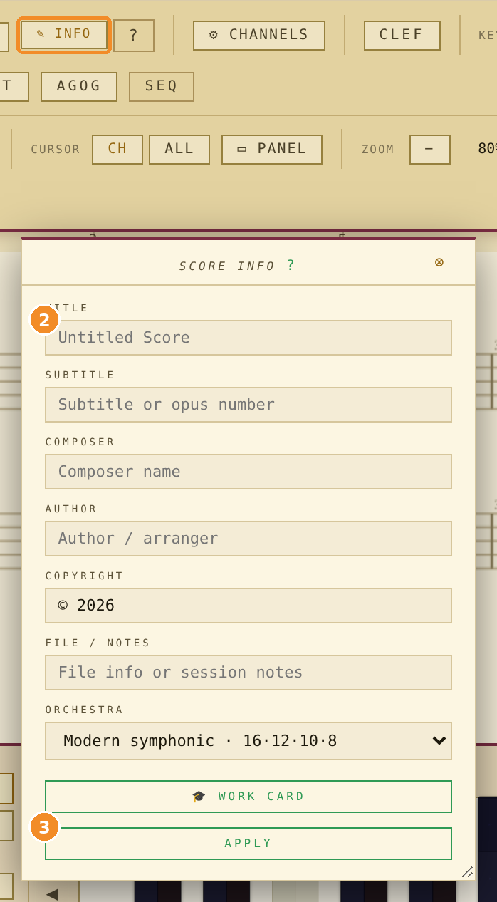
Comment savoir que c’est réussi : dans la vue PAGE, vous voyez le grand titre en haut et le compositeur à droite.
Orchestra dit pour quelle taille d’orchestre est l’œuvre, de l’orchestre de chambre au grand orchestre romantique. Avec cela, la suite sait combien de musiciens a chaque pupitre de cordes.
Tempo · indiquer un Adagio, ou changer de tempo en cours de pièce
Le tempo est la vitesse de la musique. Il se mesure en BPM : pulsations par minute. 60 BPM, c’est une pulsation par seconde, comme une horloge ; 120 BPM, c’est deux fois plus vite.
Pour mettre le tempo :
- Placez le curseur sur la mesure où ce tempo commence.
- Appuyez sur le bouton TEMPO.
- Dans Term, choisissez un mot (Adagio = lent, Allegro = rapide) ou écrivez le vôtre.
- Dans BPM, réglez le nombre avec − et +.
- Appuyez sur Insert Marking.

Comment savoir que c’est réussi : au-dessus de la portée apparaît, par exemple, « Allegro ♩ = 120 », et la musique joue à cette vitesse.
Pour que la musique accélère ou ralentisse au milieu de l’œuvre : placez le curseur sur la mesure où elle change et refaites les étapes.
- This bar met le tempo au début de la mesure. This place le met sur le temps exact où se trouve le curseur.
- Show éteint cache le « ♩ = 120 » de la partition, mais la musique garde cette vitesse.
Clé · changer de clé en cours de portée
La clé est le signe au début de la portée. Elle dit quelle note est chaque ligne. La clé de sol (Treble) est pour les sons aigus : violon, flûte, la main droite du piano. La clé de fa (Bass) est pour les graves : violoncelle, contrebasse, la main gauche. La clé d’ut (C Clef) est pour l’alto.
Pour changer de clé :
- Placez le curseur sur l’instrument (et sur la mesure, si la clé change en cours de route).
- Appuyez sur le bouton CLEF.
- Dans Scope, choisissez jusqu’où elle s’applique (voir plus bas).
- Cliquez sur la clé voulue. La clé d’ut se fait glisser vers le haut ou le bas pour la mettre sur une autre ligne.

- All channels : tous les instruments, toute l’œuvre. This channel : l’instrument actif, toute l’œuvre.
- This bar : à partir de la mesure du curseur. Utile pour le violoncelle qui monte en clé d’ut. This place : à partir du temps exact du curseur.
- Selection : seulement les mesures sélectionnées ; ensuite la clé précédente revient toute seule.
La clé ne change pas le son : elle change la façon d’écrire les notes, pour qu’elles ne se remplissent pas de lignes supplémentaires. Si la nouvelle clé colle à une note, ↔ Nudge la déplace un peu à gauche ou à droite.
Octave (8va, 15ma, 8vb, 15mb) met une ligne d’octave sur quelques mesures : les notes s’écrivent une ou deux octaves plus près de la portée, mais sonnent au même endroit.
Chiffrage de mesure · et ce qu’il advient de ce qui est écrit
Le chiffre de mesure, ce sont les deux nombres du début, par exemple 3/4. Celui du haut dit combien de temps a chaque mesure ; celui du bas, quelle figure vaut un temps (4 = noire, 8 = croche). Une valse est en 3/4 : trois noires par mesure.
Pour le changer :
- Appuyez sur le bouton TIME.
- Écrivez Numerator (en haut) et Denominator (en bas), ou choisissez-en un dans Quick Select : 3/4, 2/4, 6/8…
- Choisissez l’un des deux boutons (voir plus bas).

- Apply to All Channels change seulement les nombres. Les notes restent où elles sont. Utilisez-le quand vous n’avez encore rien écrit, ou quand le chiffre était faux mais que les notes sont justes.
- Re-bar the music change les nombres et répartit à nouveau les notes dans les nouvelles mesures. Une note coupée par une nouvelle barre est divisée en deux et liée.
Comment savoir que c’est réussi : au début de la portée vous voyez le nouveau chiffre, et avec Re-bar chaque mesure a exactement les temps que dit le chiffre.
Attention : TIME change le chiffre de toute l’œuvre, depuis le début. Si l’œuvre a déjà des changements de chiffre au milieu (par exemple parce que vous l’avez importée de Finale), Re-bar ne fonctionne pas.
Armure · et transposer la musique avec elle
L’armure, ce sont les dièses (♯) ou les bémols (♭) au début de chaque portée. Ils disent dans quelle tonalité est la musique : sol majeur a un ♯, fa majeur a un ♭.
Pour mettre l’armure :
- Appuyez sur le bouton qui affiche la tonalité (par exemple C Major).
- Choisissez jusqu’où elle s’applique (voir plus bas).
- Choisissez Major ou Minor.
- Parcourez les tonalités avec ▶ et ◀ : chaque clic sur ▶ ajoute un ♯ (ou enlève un ♭), chaque clic sur ◀ ajoute un ♭ (ou enlève un ♯). L’armure change aussitôt.

- All CH : tous les instruments, toute l’œuvre. This CH : seulement l’instrument actif.
- This Bar : à partir de la mesure du curseur. C’est ainsi qu’on change de tonalité au milieu de l’œuvre.
- Selection : seulement les mesures sélectionnées ; ensuite l’armure précédente revient.
Deux choses différentes : changer l’armure laisse les notes où elles sont. ⇅ Transpose music to key déplace aussi la musique dans la nouvelle tonalité : tout sonne plus aigu ou plus grave, comme quand un chanteur demande la chanson « un ton plus bas ».
Comment savoir que c’est réussi : les ♯ ou ♭ apparaissent au début de chaque portée, ou sur la mesure où la tonalité change.
Mesures · anacrouse, barres de mesure et respiration entre les mouvements
BARS sert à tout ce qui concerne les mesures : l’anacrouse, ajouter ou supprimer des mesures et le type de barre. Il travaille sur la mesure où se trouve le curseur.
Ajouter ou supprimer des mesures :
- Placez le curseur sur une mesure et appuyez sur BARS.
- L’interrupteur dit Add (ajouter) ou Delete (supprimer). À côté, combien de mesures.
- Choisissez Before (avant) ou After (après) la mesure du curseur. Au milieu, vous voyez son numéro (M1 est la mesure 1).
- Appuyez sur Apply.

Tout ce qui vient après se déplace avec la musique : notes, nuances, tempos, reprises et changements de chiffre ou d’armure.
- Upbeat : l’anacrouse, les notes avant la première mesure complète (le « et » avant le « un »). Allumez-le et choisissez sa durée.
- Barline : le type de barre après (ou avant) la mesure : simple, double, finale, pointillée… La double sépare les sections ; la finale termine l’œuvre.
- Respiro : des secondes de silence à cette barre avant de continuer, utile entre les mouvements. 0 = attacca, enchaîner sans s’arrêter.
- Beat : place la barre au milieu de la mesure, avant ce temps. Cela arrive quand une section se termine au milieu d’une mesure et que la suite est l’anacrouse de la section suivante.
- BAR NUM affiche ou cache les numéros de mesure. GROUP fait traverser les barres entre les portées de chaque accolade ou crochet.
- REP ouvre Repeats, pour les reprises.
Comment savoir que c’est réussi : les numéros de mesure se décalent et la nouvelle barre apparaît à sa place.
Reprises · reprises, D.C., Coda et voir la pièce dépliée
Une reprise fait sonner un passage deux fois (ou plus) sans le réécrire. On la marque avec les barres ‖: et :‖. Avec D.C. (da capo, « depuis le début ») ou D.S. (dal segno, « depuis le signe »), la musique saute en arrière.
Pour répéter un passage :
- Appuyez sur le bouton :|.
- Dans I WANT TO ①, choisissez Repeat.
- Dans From bar et To bar ②, écrivez la première et la dernière mesure. Dans Times, combien de fois il sonne.
- Regardez la ligne Plays ⑤ : elle dit dans quel ordre les mesures seront jouées.
- Appuyez sur Create ⑥.
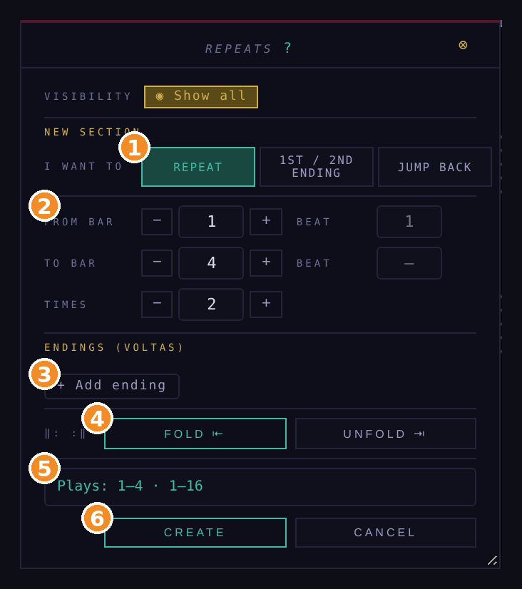
Pour sauter en arrière avec D.C. ou D.S. : dans I WANT TO, choisissez Jump back.

- D.C. revient au début ; D.S. revient au signe 𝄋, que vous placez dans Segno at ①.
- Comment ça finit ③ : simple continue jusqu’à la fin ; al Fine s’arrête là où il y a Fine ; al Coda saute à la Coda.
- Unfold ④ montre l’œuvre dépliée, comme elle sonne, avec les reprises écrites. Fold la replie.
Comment savoir que c’est réussi : les barres de reprise (ou le D.C. ou D.S.) apparaissent dans la partition, et la ligne Plays dit l’ordre que vous allez entendre.
Pour ceux qui ont besoin de plus de détails :
Une section peut commencer par sa propre anacrouse : From et To ont chacun leur Beat. From 24 · Beat 2 fait entrer la section au milieu de la mesure 24 ; To 64 · Beat 1 place le :‖ au milieu de la mesure 64, et la reprise revient à l’anacrouse de la section. From 0 commence à l’anacrouse de l’œuvre : la première reprise y revient donc. Avec Beat vide, la section prend des mesures entières. Une œuvre peut avoir plusieurs sections à la suite, et toutes se répètent.
Les cases de 1re et 2e fois s’ajoutent avec + Add ending, une par passage, et chacune a son Beat au début et à la fin : c’est ainsi qu’on écrit une 1re case qui se termine par l’anacrouse qui revient au début, ou une 2e case qui laisse la place à l’anacrouse de la section suivante. Chaque case ne sonne qu’à son passage, et son étiquette est le numéro de ce passage : « 1. », « 2. » et, dans une reprise à trois fois, « 3. ».
Dans les mesures en 6/8, 3/8 ou 9/8, Beat compte des croches : en 6/8, il va de 1 à 6. To 8 · Beat 5 place le :‖ après la cinquième croche de la mesure 8. Il en va de même pour les cases et pour le Beat de BARS.
Reprise avec 1re et 2e fin. Écrivez la musique des deux fins l’une après l’autre : la 1re dans la dernière mesure de la reprise, la 2e dans la mesure suivante. Dans Repeats : From bar = la première mesure, To bar = la mesure de la 1re fin, et le bouton 1st / 2nd ending. Les deux fins se créent toutes seules. Avant Create, la ligne Plays indique dans quel ordre les mesures seront jouées : c’est le moteur qui joue qui l’écrit.
Pour la corriger, clic droit sur sa zone ombrée (au-dessus ou au-dessous de la portée), sur la barre ‖: ou :‖, ou sur le crochet d’une fin : le même Repeats s’ouvre avec tout chargé. Apply la corrige et Delete la supprime. S’il y a déjà une reprise sur ces mesures, le Score n’en crée pas une autre par-dessus : il vous avertit.
Texte · placer des repères de répétition
TEXT met des textes sur la partition : les lettres de répétition (A, B, C…, pour dire « on commence à B »), et des mots comme Coda, Fine, Solo ou Tutti.
Pour mettre un texte :
- Placez le curseur là où il va.
- Appuyez sur le bouton TEXT.
- Écrivez le texte ① ou cliquez sur l’un des textes rapides ②.
- Appuyez sur Insert Text ⑤.

Pour mettre des lettres de répétition dans toute l’œuvre d’un coup :
- Dans EVERY ③, écrivez tous les combien de mesures (par exemple 10).
- Choisissez LETTERS (A, B, C…), NUMBERS (1, 2, 3…) ou BAR NUM (le numéro de mesure).
- Choisissez le cadre : box (carré), circle ou none (sans cadre).
- Appuyez sur Generate ④. Clear marks les enlève.
- SCOPE : This channel, sur cet instrument ; All channels, sur tous ; Each group, une fois pour chaque groupe de portées.
- Les paroles d’une chanson, syllabe par syllabe sous les notes, s’écrivent dans la partie LYRICS : voyez Paroles.
Comment savoir que c’est réussi : le texte apparaît au-dessus de la portée, à l’endroit du curseur.
Paroles · les syllabes attachées aux notes
Pour une chanson, un chœur ou un exercice avec texte, les paroles ne s’écrivent pas comme un texte libre mais note par note. Chaque syllabe est enregistrée dans sa note et dessinée centrée sous elle : si vous changez le zoom ou l’espacement, la syllabe suit sa note, et elle ne se perd pas dans les reprises. C’est dans le popup TEXT, dans le bloc Lyrics.

Écrire les paroles. Placez le curseur sur la note où commencent les paroles —ou sélectionnez-la— et appuyez sur LYRICS. Un champ apparaît sur la note : vous écrivez la syllabe et Espace (ou Tab) passe à la note suivante. Si le mot continue, vous écrivez le trait d’union - au lieu de l’espace : la syllabe garde son trait d’union et vous passez à la note suivante. Shift+Tab revient à la note précédente, Entrée termine et Échap sort sans enregistrer ce que vous venez d’écrire. Les silences et les notes liées sont sautés d’eux-mêmes.
Un exemple : pour « Ah ! vous dirai-je, maman », vous écrivez Ah Espace vous Espace di - rai - je Espace ma - man. Quand une syllabe dure plusieurs notes (un mélisme), appuyez sur Espace sur les notes suivantes sans rien écrire : elles restent sans syllabe et la syllabe précédente se prolonge. Pour corriger une syllabe, placez le curseur sur sa note et appuyez sur LYRICS : le champ montre ce qu’elle contient ; vous l’effacez et vous écrivez la nouvelle.

L’aspect. Entre les syllabes d’un même mot, le Score dessine le trait d’union, centré dans l’espace qui reste ; quand la dernière syllabe d’un mot dure plusieurs notes, il dessine la ligne de prolongation jusqu’à la dernière note du mélisme. Size change la taille des paroles du canal et Y les descend ou les monte par rapport à la portée, par exemple quand il y a des notes très graves ; avec la Line 2 ou 3 choisie, Y déplace la traduction. Chaque canal a ses propres paroles : un chœur à quatre voix a des paroles sur chaque portée.

La traduction. Sous les paroles, il y a de la place pour deux lignes de traduction. Choisissez Line 2 (ou 3) et appuyez sur LYRICS sur la première note d’une phrase : écrivez-y la phrase entière, avec ses espaces, et Tab passe à la note suivante (Tab sur les notes où aucune phrase ne commence les laisse vides). Chaque phrase reste attachée à sa note et se dessine en italique, alignée à partir de cette note et sous le système, même si les paroles appartiennent à la portée du haut. Line 1 revient aux paroles chantées. CLEAR et TEXTS → LYRICS agissent sur la ligne choisie.

TEXTS → LYRICS sert quand les paroles étaient déjà écrites comme textes libres du canal : il les transforme en vraies paroles, et chaque texte va à la note la plus proche de son temps. CLEAR efface les paroles du canal actif. Tout se défait avec Undo et s’enregistre avec l’œuvre dans le .mmf. Les paroles voyagent aussi en MusicXML : elles sortent à l’export (chaque syllabe avec son trait d’union, la traduction comme couplets 2 et 3) et entrent à l’import du XML de Finale, MuseScore ou Sibelius.
Mode démo · montrer une œuvre sans la modifier
Pour présenter une œuvre —en classe, sur un écran ou pour enregistrer une vidéo— le Score s’ouvre en mode démo en ajoutant ?demo à l’adresse : mm-score-page.html?demo. Les barres d’édition, le clavier et les boutons de l’en-tête sont masqués ; il reste la partition et la barre du bas, avec Play, Pause, Stop et les sauts de mesure. Espace lance et arrête la lecture. Rien de ce que l’on fait sur la partition ne la modifie : un clic place seulement le curseur pour jouer à partir de là.
Avec &file=, un fichier s’ouvre directement, et avec &page il s’affiche comme une page : mm-score-page.html?demo&file=../Claude%20outputs/Claude-2026-seikilos.mmf&page. Le son voyage avec la page : la démo charge le Keyboard caché, comme moteur, et l’œuvre sonne sans rien ouvrir d’autre (si un Keyboard est déjà ouvert, elle utilise celui-là).
En haut, centrés à côté du titre, la démo a trois boutons : PAGE / SCROLL passe de la page à la bande, PRINT prépare la page et ouvre l’impression avec les pages prêtes (le navigateur affiche toujours sa fenêtre d’impression avant d’imprimer), et PULSE ouvre le métronome.

Nuances · une indication, ou un crescendo sur deux mesures
Les nuances disent à quel point on joue fort ou doux : pp très doux, p doux, mf moyennement fort, f fort, ff très fort. Les soufflets (crescendo et diminuendo) disent que le son grandit ou s’éteint peu à peu.

Pour mettre une nuance :
- Placez le curseur sur la note où elle commence.
- Appuyez sur le bouton DYN.
- Cliquez sur la nuance ④ : p, f, mf…
Pour mettre un soufflet :
- Placez le curseur là où il commence, ou sélectionnez le passage voulu.
- Cliquez sur crescendo ou diminuendo ①.
Sans sélection, le soufflet mesure une mesure. Pour l’allonger ou le raccourcir, tirez sa pointe.
- cresc. et dim. en mots ② servent quand le soufflet dessiné ne tient pas. SPAN dit combien ils durent : 1 beat (un temps), ½ bar ou 1 bar.
- SCOPE ③ : This channel, seulement cet instrument ; All channels, tout l’orchestre ; Selected, les instruments que vous cochez.
- Dans la ligne du bas ⑤, vous pouvez écrire un mot avant ou après la nuance, comme « più f » ou « p subito ».
Comment savoir que c’est réussi : la nuance ou le soufflet apparaît sous la portée, et on entend le changement en jouant.
Articulations · le staccato, le coup d’archet, le trille
Les articulations sont les petits signes au-dessus ou au-dessous de la note qui disent comment la jouer : le point du staccato (courte), le petit trait du tenuto (tenue), l’accent > (avec force).
Pour mettre une articulation :
- Placez le curseur sur la note, ou sélectionnez-en plusieurs.
- Appuyez sur le bouton ART.
- Cliquez sur le signe ③.
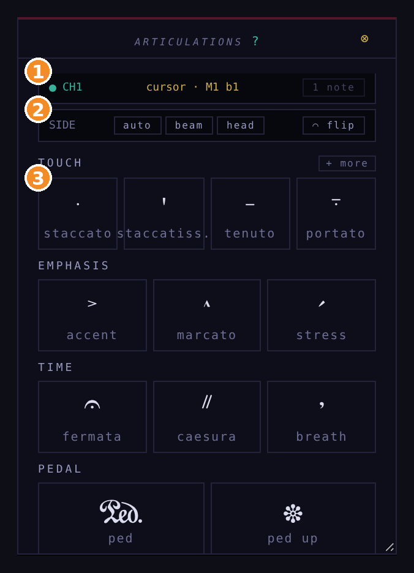
- La ligne du haut ① dit où il va tomber : le canal, le curseur ou la sélection, et combien de notes (par exemple « 1 note »).
- SIDE ② : auto décide tout seul si le signe va au-dessus ou au-dessous ; beam le met du côté de la hampe ; head, du côté de la tête.
- Les signes ③ vont par groupes : TOUCH (staccato, tenuto…), EMPHASIS (accents), TIME (fermata est le point d’orgue, caesura, breath), PEDAL et, plus bas, les ornements (trill, turn, mordent, tremolo).
- Avec une sélection, ped met la pédale là où elle commence et la lève là où elle finit.
Comment savoir que c’est réussi : le signe apparaît sur la note, et on l’entend en jouant : le staccato sonne court, l’accent plus fort.
Durée · choisir la valeur de note avant d’écrire
Avant d’écrire une note, vous choisissez combien elle dure : sa figure (ronde, blanche, noire, croche…). La figure reste choisie, et chaque note que vous écrivez sort avec cette valeur jusqu’à ce que vous en choisissiez une autre.
Pour choisir la figure :
- Appuyez sur le bouton DUR.
- Cliquez sur la figure ② : 1/1 est la ronde, 1/2 la blanche, 1/4 la noire, 1/8 la croche, et ainsi de suite jusqu’à 1/64.
- Écrivez les notes.

Raccourci : vous pouvez aussi choisir la figure avec le numpad, sans ouvrir le popup.
Pour écrire des silences : cliquez encore sur la figure déjà allumée. Chaque note sort alors comme un silence. Un autre clic, ou une autre figure, et vous revenez aux notes.
Les quatre boutons du bas ③ :
- DOT ajoute le point : la note dure une fois et demie plus longtemps. Il ne vaut que pour la note suivante.
- GRACE fait sortir les notes comme notes d’agrément. Chaque clic change : ACCIACCATURA (barrée), APPOGGIATURA, éteint. Il reste allumé jusqu’à ce que vous l’éteigniez.
- REST met un silence de la figure choisie là où se trouve le curseur.
- TUPLET ouvre le triolet : trois notes à la place de deux.
Comment savoir que c’est réussi : la figure choisie reste allumée en vert, et la note que vous écrivez a cette forme.
Expression · dolce, espressivo, et jusqu’où ils s’étendent
Une expression est un mot qui dit le caractère de la musique : dolce (doux), espressivo, agitato, cantabile. Dans Music Motion, le mot n’est pas que de l’encre : l’instrument le lit et change sa façon de jouer.
Pour mettre une expression :
- Placez le curseur là où elle commence.
- Appuyez sur le bouton EXPR.
- Écrivez le mot ① ou cliquez sur l’un des mots rapides ②.
- Appuyez sur Insert Expression ④.

- Le mot vaut à partir de là jusqu’à l’expression suivante du même instrument.
- SCOPE ③ : This channel, seulement cet instrument ; All channels, tous.
- Show éteint cache le mot de la partition, mais l’instrument continue de le jouer.
- Vous pouvez l’écrire dans votre langue : voyez comment.
Comment savoir que c’est réussi : le mot apparaît en italique au-dessus de la portée.
AGOG · qui décide du rubato
L’agogique, c’est la liberté du temps : allonger un peu une note ou une phrase, comme le fait un musicien quand il respire (le rubato). Ce popup est la carte de l’agogique de votre œuvre : il vous dit où il y en a et vous y emmène.
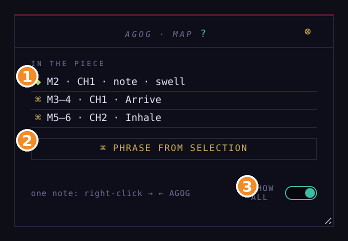
Pour voir l’agogique de votre œuvre :
- Appuyez sur le bouton AGOG.
- Dans la liste ①, vous voyez chaque phrase (⌘) et chaque note allongée (◆), dans l’ordre des mesures.
- Cliquez sur l’une d’elles : le curseur y va et son éditeur s’ouvre, pour la corriger.
Pour donner de l’agogique à une phrase :
- Avec SELECT, sélectionnez les mesures de la phrase.
- Appuyez sur AGOG puis sur ⌘ Phrase from selection ②. L’agogique de phrase s’ouvre : vous y choisissez comment elle respire.
C’est la même chose qu’un clic droit sur la sélection, puis ⌘ ASYM AGOG. Si rien n’est sélectionné, le bouton vous le dit.
Pour allonger une seule note : clic droit sur la note, puis ← AGOG. Voyez AGOG de la note.
- Show all ③ montre ou cache dans la partition toutes les marques d’agogique. Cachées, elles restent enregistrées dans le fichier.
Comment savoir que c’est réussi : la nouvelle phrase ou note apparaît dans la liste, à sa mesure.
Tools · quand l’écran se remplit de panneaux
Pendant que vous travaillez, vous ouvrez beaucoup de popups, et l’écran se remplit. TOOLS sert à les ranger et à ouvrir les réglages.

- Open popups ① : Top les ouvre sous la barre du haut ; Bottom, au-dessus du clavier.
- View popups ② : Free, chacun là où vous l’avez laissé ; Cascade, en escalier ; Grouped, côte à côte ; Stack, l’un sur l’autre, comme un paquet de cartes. Plus de détails.
- La liste ③ montre les popups ouverts : chacun avec une flèche pour le mettre au premier plan et une croix pour le fermer.
- Hide all ④ cache tous les popups d’un coup ; la touche X fait la même chose et les fait réapparaître. Reset positions les remet à leur place habituelle.
- Score Options et Preferences ⑤ ouvrent les réglages : l’aspect de la partition et le comportement du Score.
Score Options · laisser respirer la feuille
Score Options règle l’aspect de la partition : si les notes sont trop serrées ou trop lâches. Il s’ouvre depuis TOOLS.

- Note spacing ① : l’espace entre les notes. Il vaut pour toute l’œuvre ; avec une sélection active, seulement pour ce passage.
- Note size ② : la taille des notes, par exemple plus petites pour une partie qui ne sert que de repère (cue). Il faut une sélection.
- Staff spacing ③ : l’espace entre les portées, pour toute l’œuvre.
- Bar numbers ④ : Continuous numérote les mesures à la suite ; Per movement recommence à chaque mouvement. Cela ne change que l’affichage : pour aller à une mesure, le numéro reste celui de la suite continue.
Comment savoir que c’est réussi : la partition change dès que vous choisissez la valeur.
Preferences · comment vous voulez que le Score se comporte
Preferences garde votre façon de travailler. On le règle une fois et c’est enregistré pour la prochaine fois. Il s’ouvre depuis TOOLS.

- ① Open in : le dossier où commence IMPORT MMF : le dernier utilisé (Last used) ou Documents.
- ② Coach : On ou Off, si l’application Coach vous donne des conseils pendant que vous écrivez.
- ③ Remember place : avec On, chaque popup se rouvre là où vous l’avez laissé, avec sa taille.
- ④ Save on its own : enregistre tout seul toutes les 2, 5 ou 10 minutes ; Off n’enregistre pas tout seul.
- ⑤ Messages : la langue des messages. Avec FR, NL ou DE, le guide s’affiche dans cette langue et les messages, pour l’instant, en anglais.
- ⑥ Colours : la couleur de l’écran : Dark, Gray, Clear (comme du papier) ou Contrast. Arrangement range les popups, comme dans TOOLS.
- ⑦ Warnings on open : Quiet vérifie le fichier sans vous déranger ; On screen vous montre en plus les mesures qu’il vaut la peine de regarder.
- ⑧ Notation : Key change dit quelles altérations sont annulées au changement d’armure (Dropped only, seulement celles qui disparaissent ; All, toutes) ; Slur est la forme d’une nouvelle liaison ; Sizes, la taille des nuances (DYN) et des articulations (ART) ; SUBDIV, Auto la déduit de la musique à l’ouverture et File utilise celle du fichier.
Diapason · jouer à 415, comme dans le baroque
Le diapason, c’est le la sur lequel tout l’orchestre s’accorde. Aujourd’hui on utilise la = 440 Hz (440 vibrations par seconde). À l’époque baroque, il était plus bas, vers 415.
Pour le changer :
- Appuyez sur le bouton A= 440 de la barre du haut.
- Choisissez l’un des diapasons historiques ②, ou déplacez le curseur ① pour une valeur exacte.
- Reset ③ revient à 440.

- Ça ne transpose pas : toute l’œuvre sonne un peu plus grave ou plus aiguë, mais les notes écrites ne changent pas.
- C’est le même A= que dans le Keyboard : le changer là-bas pendant que le Score joue fonctionne aussi.
Comment savoir que c’est réussi : le bouton affiche le nouveau nombre et la musique sonne plus grave ou plus aiguë.
Annuler et effacer · revenir en arrière, ou vider un canal
Annuler revient sur la dernière chose que vous avez faite. Le raccourci est Ctrl+Z (ou la touche Backspace ←), et Ctrl+Y la refait. Ce popup sert à revenir plusieurs pas d’un coup, et à effacer.
Pour un seul pas, inutile d’ouvrir le popup : les flèches de part et d’autre du bouton font la même chose que les raccourcis. ↩ ④ annule un pas (comme Ctrl+Z) et ↪ ⑤ le rétablit (comme Ctrl+Y).
Pour annuler plusieurs pas :
- Appuyez sur le bouton ↩ UNDO.
- Choisissez combien de pas ① : 1, 3, 5 ou 10.
- Appuyez sur ↩ Undo ②.

Pour effacer ③ :
- At cursor : les notes de l’instrument actif qui sont juste sur le curseur.
- Selection : ce que vous avez sélectionné. Si rien n’est sélectionné, il ne fait rien.
- Active CH : toutes les notes de l’instrument actif. All CH : toutes les notes de tous les instruments. Ces deux-là demandent avant d’effacer.
- Tout ce que vous effacez peut être annulé.
Comment savoir que c’est réussi : sous les nombres, une ligne dit combien de pas sont gardés. « No history yet » veut dire qu’il n’y a encore rien à annuler.
Canaux · ajouter un instrument à la pièce
Chaque instrument de votre œuvre vit dans un canal : une ligne de cette liste et une portée dans la partition. Le Score a 32 canaux.
Pour ajouter un instrument :
- Appuyez sur le bouton ⚙ CHANNELS.
- Appuyez sur + ADD CHANNEL ④ : le canal suivant s’allume et sa portée apparaît.
- Dans sa ligne, ouvrez la liste ② et choisissez l’instrument.
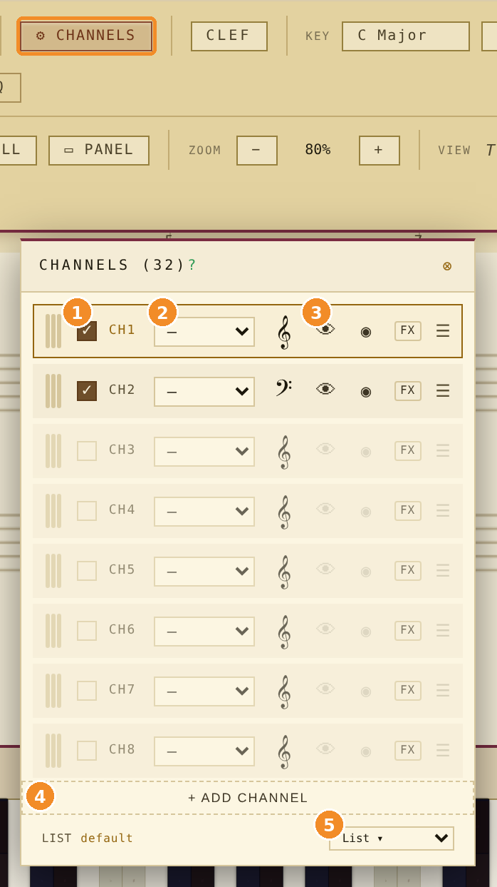
Comment savoir que c’est réussi : la nouvelle portée apparaît avec le nom de l’instrument, et elle sonne avec son timbre en jouant.
- La case ① dit si la portée est visible. Éteinte, elle disparaît de l’écran mais continue de sonner : voir et ne pas voir.
- L’instrument ② décide comment sonne le canal : plus de détails.
- 👁 rend la portée pâle ; ◉ la met en silence (entendre et ne pas entendre) ; FX lui ajoute réverbération ou écho (Sound FX).
- ☰ ouvre les options du groupe, pour mettre deux instruments sur une portée.
- List ⑤ charge une liste d’instruments déjà prête, au lieu de les choisir un par un.
La bande · ce que vous utilisez sans cesse, à portée de main
Bouton BAND ♪. Une bande qui suit le curseur avec ce que vous cherchez le plus en écrivant : agrément, point, n-olet, altération, agogique, articulation et nuance. Elle est là pour que vous n’ouvriez pas quatre fenêtres pour écrire une seule phrase.
Le décompte du jeu · où en est l’élève
Clic droit sur le logo. Affiche la mini-leçon du Coach et l’état du jeu de composition : quelle règle est en cours, ce qui a été atteint et ce qui reste.
Raccourcis · ceux que vous utilisez sans quitter le clavier
Clic droit sur ✎ INFO. Le petit tableau de ce qu’il vaut la peine de savoir par cœur : le pavé numérique pour les valeurs de note, espace pour jouer, Ctrl+Z, Esc. Et le lien vers la liste complète, qui s’imprime.
Sur la partition, sur ce que vous avez déjà écrit — clic droit sur la note, la liaison ou l’ornement à corriger.
Éditeur de note · corriger une note sans la réécrire
L’éditeur de note sert à changer une note déjà écrite : plus forte ou plus douce, avec une autre altération, avec la hampe de l’autre côté, transformée en silence…
Pour l’ouvrir : faites un clic droit sur la note ①. En haut, il indique de quelle note il s’agit et où elle se trouve, par exemple « DN5 · M1 B2 » (ré 5, mesure 1, temps 2).

Ce qui sert le plus :
- VEL ② : la force de cette note seule. + et − la changent de 1, +5 et −5 de 5. N la rend à ce que dit la bande de nuances.
- Hide note cache la note : elle sonne toujours mais ne s’imprime pas. Flip stem retourne la hampe. → Rest la transforme en silence. Dot ajoute ou enlève le point.
- ACC ③ : l’altération. Double bémol, bémol, bécarre, dièse, double dièse.
- PRES ④ : la présence, le poids de l’attaque, de −2 à +2. Pour faire ressortir une voix intérieure d’un accord, donnez-lui PRES +1.
Une note dont VEL ou PRES ont été changés ne porte aucun signe dans la partition. Pour les retrouver, allumez SHOW HIDDEN ⑤ : à côté de chacune apparaît en gris ce qu’elle porte (par exemple « v96 »), et sa tête devient lavande. Cela ne se voit qu’à l’écran, jamais sur la feuille imprimée.
Comment savoir que c’est réussi : le changement se voit (ou s’entend) aussitôt sur la note, et la ligne du haut de l’éditeur affiche la nouvelle valeur. Si vous vous êtes trompé, UNDO l’annule.
D’ici s’ouvrent aussi les éditeurs de la liaison, de la hampe et de la barre de croches, et avec la ligne ³ TUPLET, celui du triolet.
Éditeur de liaison · que l’arc soit comme vous l’avez pensé
Une liaison est l’arc qui relie plusieurs notes : elles se jouent ensemble, en une seule phrase. L’éditeur de liaison sert à changer où elle commence et où elle finit, son aspect et la façon de la jouer.
Pour l’ouvrir : faites un clic droit sur l’arc de la liaison ①. L’arc montre trois points et l’éditeur s’ouvre à côté.
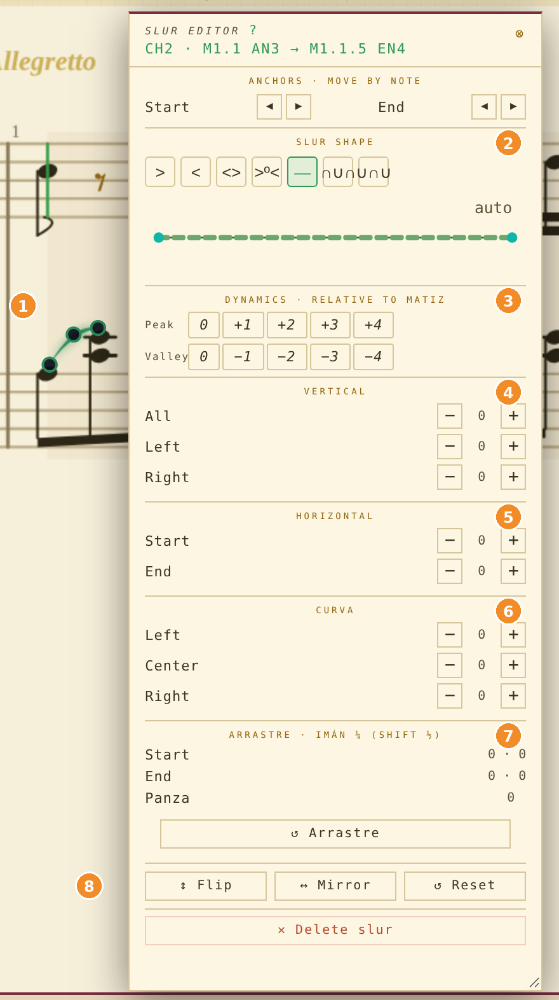
En haut, Anchors : les flèches ◀ ▶ de Start et End déplacent le début ou la fin de la liaison vers la note précédente ou suivante.
La forme de la liaison ② ne change pas le dessin de l’arc : elle change la façon de jouer la phrase. La ligne verte de l’éditeur vous la montre, et dans la partition elle se voit à la couleur de l’arc : vert là où la phrase est plus forte, doré là où elle est plus douce.

- > diminue : elle commence fort et finit doucement. < grandit : c’est l’inverse.
- <> s’ouvre au milieu et se referme. >º< se creuse au milieu et revient.
- — plate : soutenue, sans changement. C’est la forme avec laquelle naît la liaison.
- ∩∪∩ et ∪∩∪ : les notes deux par deux, fort-faible ou faible-fort. L’arc ne change pas d’aspect.
De combien elle monte ou descend, vous le choisissez dans Dynamics ③ : Peak dit de combien le point le plus haut est plus fort (+1 à +4), et Valley de combien le plus bas est plus doux (−1 à −4), toujours par rapport à la nuance écrite.
Les boutons qui changent le dessin de l’arc, pour qu’il ne heurte rien :
- Vertical ④ : monte ou descend l’arc entier (All) ou une seule extrémité (Left, Right).
- Horizontal ⑤ : déplace le début ou la fin sur les côtés.
- Curva ⑥ : de combien l’arc se courbe, à gauche, au centre ou à droite.
- Arrastre ⑦ : les trois points de l’arc se déplacent aussi à la souris et s’aimantent au ¼ d’interligne (avec Maj, au ½). Cette ligne indique de combien vous les avez déplacés, et ↺ Arrastre n’annule que cela.
- ⑧ ↕ Flip passe l’arc de l’autre côté des notes. ↔ Mirror l’inverse de gauche à droite. ↺ Reset lui rend son dessin automatique. ✕ Delete slur supprime la liaison.
Comment savoir que c’est réussi : l’arc change dans la partition dès que vous appuyez sur un bouton, et à l’écoute la phrase suit la forme choisie. Si cela ne vous plaît pas, UNDO l’annule.
Une liaison de trois mesures ou plus attache seule chaque extrémité du bon côté : à la tête de la note si l’arc est du côté de la tête, au bout de la hampe ou à la barre de croches s’il est du côté de la hampe.
Éditeur de hampe · quand la hampe heurte ou ne va pas assez loin
La hampe est le petit trait vertical de la note. Le Score la dessine tout seul, vers le haut ou vers le bas selon la hauteur de la note. L’éditeur de hampe sert à la changer quand elle heurte quelque chose ou qu’elle est trop courte.
Pour l’ouvrir : faites un clic droit sur la note ; dans l’éditeur de note qui s’ouvre, choisissez STEM EDITOR ①.

- Direction ② : ↑ Up tourne la hampe vers le haut, ↓ Down vers le bas et ⟳ Auto laisse le Score choisir.
- Extension ③ : + allonge la hampe et − la raccourcit, par exemple pour qu’elle atteigne la barre de croches.
- X offset ④ : décale la hampe sur le côté. Utile pour les secondes, quand deux notes voisines partagent la hampe.
- ↺ Reset ⑤ : rend à la hampe le dessin du Score.

Comment savoir que c’est réussi : la hampe change dans la partition dès que vous appuyez sur le bouton. Ce n’est que du dessin : la note sonne pareil.
Éditeur de ligature · joindre, couper et décider comment sonne le groupe
La barre de croches est le trait épais qui relie les croches et les doubles croches en groupes, pour qu’elles se lisent facilement. Le Score forme les groupes tout seul ; l’éditeur de barre sert à les réunir, les couper ou les déplacer.
Pour l’ouvrir : faites un clic droit sur une note du groupe ; dans l’éditeur de note, choisissez BEAM EDITOR ①. Raccourci : sélectionnez une note et appuyez sur Maj+B.

- Join ② réunit les notes sélectionnées en un groupe ; Break les sépare, chacune avec son crochet ; Auto revient aux groupes du Score. Ce que vous dessinez est aussi ce que vous entendez : le Score joue le groupe tel qu’il le voit.
- Left, Right et Both ③ montent (↑) ou descendent (↓) l’extrémité gauche, l’extrémité droite ou la barre entière. Reset angle, en bas, rend à la barre son inclinaison automatique.
- Stems ④ : toutes les hampes du groupe vers le haut, vers le bas, inversées (⇅) ou automatiques.
- Int·Beams ⑤ : de combien les notes importantes du groupe sonnent plus fort que les autres, de 0 (toutes pareilles) à 4 (très marqué). G utilise le réglage de toute l’œuvre. Plus dans Intelligent Beams.

Comment savoir que c’est réussi : vous voyez aussitôt la barre réunie, coupée ou déplacée, et à l’écoute le groupe sonne comme vous l’avez dessiné. En cas d’erreur, UNDO l’annule.
Éditeur de n-olet · le crochet et le chiffre
Un triolet, ce sont trois notes qui prennent la place de deux. Au-dessus, elles portent un 3, parfois avec un crochet. L’éditeur de triolet change l’aspect de ce crochet et de ce chiffre.
Pour l’ouvrir : faites un clic droit sur le crochet ou le chiffre du triolet ①.
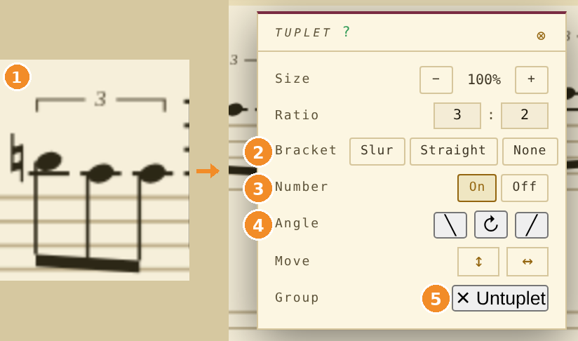
- Bracket ② : Slur dessine un arc, Straight un crochet droit et None rien, seulement le chiffre.
- Number ③ : On montre le chiffre et Off le cache.
- Angle ④ incline le crochet (↻ lui rend son inclinaison automatique) et Move le déplace pour qu’il ne recouvre pas les notes. Size change la taille du chiffre.
- ✕ Untuplet ⑤ défait le triolet : les notes reprennent leurs valeurs normales. C’est la seule chose de cet éditeur qui change le son.
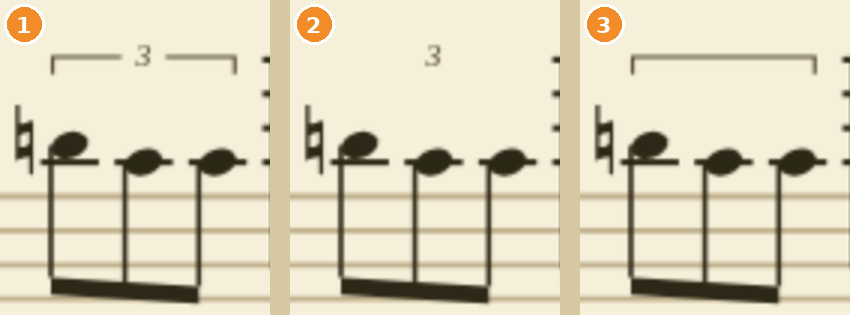
Comment savoir que c’est réussi : le crochet et le chiffre changent dès que vous appuyez sur le bouton ; le triolet sonne pareil. En cas d’erreur, UNDO l’annule.
Éditeur de liaison de prolongation · qu’elle ne touche pas les têtes
Une liaison de prolongation est l’arc qui relie deux notes identiques : elles sonnent comme une seule note longue. Elle est différente de la liaison de phrasé, qui relie des notes différentes.
Pour l’ouvrir : faites un clic droit sur la liaison ①.

- Vertical ② : All monte ou descend toute la liaison.
- Horizontal ③ : Left et Right déplacent chaque extrémité sur le côté.
- Curve ④ : Bow courbe plus ou moins l’arc.
- ↕ Flip ⑤ passe la liaison de l’autre côté des notes. ↺ Reset lui rend son dessin automatique et ✕ Remove tie la supprime.

Comment savoir que c’est réussi : la liaison change aussitôt dans la partition. Ce n’est que du dessin : les deux notes sonnent déjà comme une seule sans que vous touchiez à rien. En cas d’erreur, UNDO l’annule.
Éditeur de soufflet · étirer le crescendo jusqu’où il va
Un soufflet est le coin ouvert sous la portée : < est un crescendo (la musique grandit) et > un diminuendo (elle s’éteint). L’éditeur sert à décider où il commence, où il finit et quel aspect il a.
Pour l’ouvrir : faites un clic droit sur le soufflet ①. Dans le menu de la nuance, appuyez sur Edit hairpin… (raccourci : E). Un double-clic sur le soufflet l’ouvre aussi.

- Horizontal ② : Start et End déplacent le début et la fin ; Span indique de quelle mesure à quelle mesure il va ; Angle ouvre ou ferme le coin.
- Vertical ③ : Y offset monte ou descend le soufflet.
- Dinámica · lectura ④ vous dit ce que vous entendrez : la force de départ, la force d’arrivée et sur combien de notes. Par exemple « 26 → 53 · 7 notes » : il grandit sur sept notes.

Comment savoir que c’est réussi : le soufflet change aussitôt dans la partition, et à l’écoute le crescendo va jusqu’où vous l’avez étiré. En cas d’erreur, UNDO l’annule.
Éditeur du signe d’interprétation · le geste de la note
Le geste de la note, c’est la façon dont une note grandit ou s’éteint pendant qu’elle dure. Il sert surtout sur une note seule : une note longue, un point d’orgue, la fin d’une phrase. Il s’écrit avec un signe au-dessus de la note, et ce signe sonne : ce n’est pas seulement une indication pour le lecteur.
Pour l’ouvrir : faites un clic droit sur le signe ①.
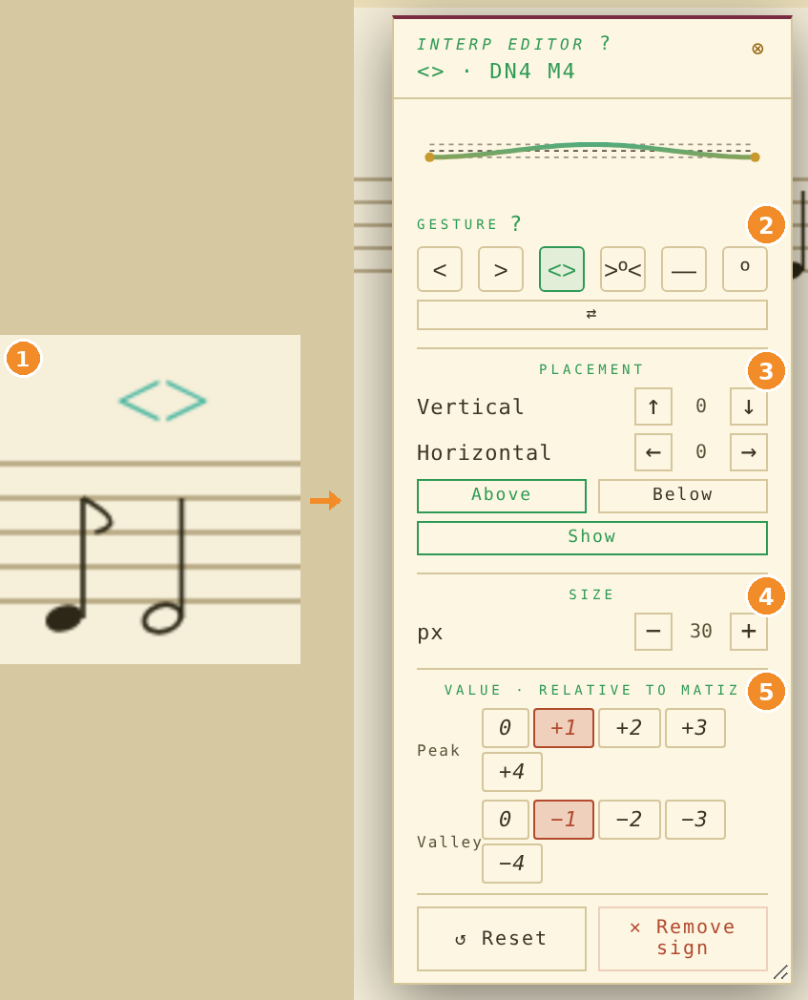
- Gesture ② : < s’épanouit (grandit) · > décroît · <> messa di voce (grandit et s’éteint) · >º< se creuse au milieu et revient · — sostenuto (égal). º ajoute le niente : commencer ou finir à partir de rien. La ligne verte en haut dessine le geste.
- Placement ③ : déplace le signe (↑ ↓ ← →), le met au-dessus ou au-dessous (Above, Below) ou le cache (Show) : caché, il sonne pareil.
- Size ④ : la taille du signe.
- Value ⑤ : Peak (de +1 à +4) dit de combien il monte et Valley (de −1 à −4) de combien il descend, à partir de la nuance en vigueur sur cette note. Un pas vaut à peu près une nuance.

Ce n’est pas la même chose que PRES, dans l’éditeur de note : PRES change le début de la note (l’attaque) ; le geste change ce qui se passe ensuite.
Comment savoir que c’est réussi : le signe change au-dessus de la note, la ligne verte de l’éditeur montre la forme, et à l’écoute la note grandit ou s’éteint comme vous l’avez choisi. En cas d’erreur, UNDO l’annule.
Éditeur de trille · combien de temps il dure et comment il accélère
Un trille (tr avec une ligne ondulée) est une note qui alterne très vite avec sa voisine du dessus. L’éditeur décide combien de temps il dure, à quelle vitesse il va et quelle voisine il utilise.
Pour l’ouvrir : faites un clic droit sur le signe ①. Dans le menu qui apparaît, appuyez sur ✎ TRILL EDITOR, le bouton encadré en orange.

- Span ② : Beats dit combien de temps dure le trille. ↺ Auto le fait durer autant que la note avec ses liaisons de prolongation.
- Tempo curve ③ : combien d’alternances par temps. Start est la vitesse au début, Stable la vitesse une fois installée et Stable pos l’endroit où elle s’installe ; Release pos est l’endroit où il commence à relâcher et End la vitesse à la fin. La ligne en dessous dessine cette courbe.
- Aux note ④ : la note voisine. auto suit l’armure ; ♮ ♯ ♭ 𝄪 𝄫 la changent, car la voisine n’est pas toujours celle de l’armure.

Comment savoir que c’est réussi : la ligne ondulée change de longueur dans la partition, et à l’écoute le trille dure et court comme vous l’avez réglé. En cas d’erreur, UNDO l’annule.
Éditeur de gruppetto · direct ou inversé, à temps ou retardé
Un gruppetto (le signe ∾) est un ornement de quatre petites notes qui tournent autour de la note : celle du dessus, la note, celle du dessous et la note à nouveau.
Pour l’ouvrir : faites un clic droit sur le signe ①. Dans le menu qui apparaît, appuyez sur ✎ TURN EDITOR, le bouton encadré en orange.

- Face ② : direct commence par la voisine du dessus ; inverted, par celle du dessous. Le signe se retourne.
- Place ③ : on the note joue le gruppetto au début de la note ; delayed le joue plus tard, vers la fin.
- Upper / Lower neighbour ④ : l’altération de chaque voisine, avec ♮ ♯ ♭ ou doubles 𝄪 𝄫. Un gruppetto sur la♯ demande sol𝄪 en dessous.
- Speed ⑤ : la valeur de chaque petite note ; avec auto, le Score choisit.

Comment savoir que c’est réussi : le signe change au-dessus de la note, et à l’écoute le gruppetto commence et tombe là où vous l’avez choisi. En cas d’erreur, UNDO l’annule.
Éditeur de mordant · vers le haut ou vers le bas
Un mordant est un ornement très court : la note, sa voisine et la note à nouveau, très vite.
Pour l’ouvrir : faites un clic droit sur le signe ①. Dans le menu qui apparaît, appuyez sur ✎ MORDENT EDITOR, le bouton encadré en orange.

- Face ② : upper va vers la voisine du dessus ; lower, vers celle du dessous. Celui du dessous porte un petit trait qui barre le signe.
- Sign ③ : décide ce qui s’imprime, sans changer le son. Avec tr, le mordant supérieur s’écrit « tr », sans ligne ondulée, comme le trille court de trois notes de Mozart ou de Haydn (si–do–si et la suite).
- Neighbour ④ : l’altération de la voisine ; auto suit l’armure.
- Speed ⑤ : la valeur de chaque petite note ; avec auto, le Score choisit.

Comment savoir que c’est réussi : le signe change au-dessus de la note, et à l’écoute la petite note va du côté que vous avez choisi. En cas d’erreur, UNDO l’annule.
Éditeur de trémolo · mesuré ou libre
Un trémolo, ce sont de petits traits en travers de la hampe : la note se répète de nombreuses fois, vite. Plus il y a de traits, plus les répétitions sont rapides.
Pour l’ouvrir : faites un clic droit sur le signe ①. Dans le menu qui apparaît, appuyez sur ✎ TREMOLO EDITOR, le bouton encadré en orange.

- Divisions ② : 1, 2 ou 3 traits, soit des croches, des doubles croches ou des triples croches du temps. C’est ce qui se lit.
- Measure ③ : measured joue exactement ces répétitions, comme une répétition écrite ; free répète vite sans compter, comme le trémolo des cordes.

Comment savoir que c’est réussi : le nombre de traits sur la hampe change, et à l’écoute la note se répète à cette vitesse. En cas d’erreur, UNDO l’annule.
Éditeur d’arpège · combien de temps il met à se déployer
Un arpège est la ligne ondulée verticale devant un accord : les notes ne sonnent pas ensemble mais l’une après l’autre, très vite.
Pour l’ouvrir : faites un clic droit sur le signe ①. Dans le menu qui apparaît, appuyez sur ✎ ARPEGGIO EDITOR, le bouton encadré en orange.

- Direction ② : ↑ up commence par la note la plus grave ; ↓ down, par la plus aiguë. La flèche du signe le montre.
- Spread ③ : combien de millisecondes passent d’une note à la suivante. En dessous s’affiche le total, par exemple « 3 notes · 90 ms in total ». C’est toute la différence entre un arpège de harpe, lent, et un arpège de piano, presque ensemble.
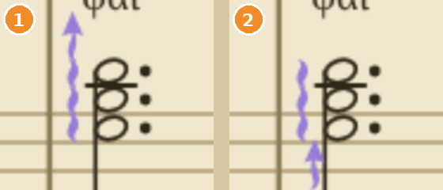
Comment savoir que c’est réussi : la flèche du signe change, et à l’écoute l’accord s’ouvre dans ce sens et à cette vitesse. En cas d’erreur, UNDO l’annule.
Barres de mesure de groupe · réunir les cordes par une seule barre de mesure
Clic droit sur l’accolade ou le crochet du groupe, dans la marge : le signe s’allume quand la souris passe dessus. Nommez le groupe et décidez si ses barres de mesure se tracent d’une portée à la suivante, comme dans une partition d’orchestre. Pour tous les groupes à la fois, il y a l’interrupteur GROUP dans BARS.
Les menus du clic droit — chacun est le menu de l’objet que vous avez touché, et ne propose que ce que cet objet permet.
⠿ Sélection · déplacer, copier et répéter un passage
Clic droit à l’intérieur d’une sélection. L’habituel — copier, couper, coller, dupliquer — plus ce qui aide vraiment dans une partition : Replicate répète le passage vers l’avant, Transpose le monte ou le descend, Snap to grid remet en place ce qui est sorti de la grille sans briser les accords, Re-value change les valeurs de note, et Save section as enregistre ce passage comme un fichier à part.
⠿ Canal · copier un instrument entier vers un autre
Clic droit sur la portée. Copy channel et Paste channel prennent tout le canal : les notes et aussi les articulations, nuances, expressions, agogique et régions. C’est ainsi que vous construisez le second violon à partir du premier. La clé du canal se change aussi ici.
⠿ Étiquette du canal · rendre muet, masquer et Sound FX
Clic droit sur le nom du canal, à gauche de la portée. Donnez-lui l’abréviation qui s’imprime, rendez-le muet pour entendre le reste, masquez-le pour qu’il ne prenne pas de place à l’écran, et c’est ici que s’ouvre le Sound FX de ce canal.
⠿ Mesure · voir ce qu’elle contient, et copier son motif
Clic droit sur le numéro de mesure. C’est une fiche de lecture : quelles notes contient la mesure, quels signes, où en est la pédale. Et en dessous, la partie pratique : copier le motif de cette mesure sur un passage de mesures, pour l’ostinato ou l’accompagnement qui se répète.
⠿ Barre de mesure · le silence avant de continuer
Clic droit sur la barre de mesure. C’est ici que se place la respiration : les secondes pendant lesquelles la musique attend à cette barre de mesure, pour que la réverbération s’éteigne avant le mouvement suivant. Attacca, c’est une respiration de 0. Et vous pouvez déclarer qu’un mouvement commence là, avec son étiquette.
Si la barre est à l’intérieur de la mesure (celle que vous avez placée avec BARS › After › Beat), le menu l’indique — « dans M24 » — et ajoute la ligne Beat : − / + la déplace sur un autre temps, et ✕ Retirer la sort de la mesure, qui se termine de nouveau par une barre simple. La respiration et le saut de système restent.
Si le chiffre de mesure change après la barre, le menu ajoute la ligne Time avec Visible · Hidden. Hidden n’imprime pas la chiffre et ne lui réserve pas de place, mais la mesure garde sa durée : c’est pour la mesure courte qui ferme une section commencée par une anacrouse (la mesure à 1/4 du Rondo alla Turca, avant la coda). À l’écran, une petite étiquette grise reste au-dessus de la barre ; un clic droit dessus fait réapparaître la chiffre.
⠿ Texte · corriger ou déplacer ce que vous avez saisi
Clic droit sur le texte. Modifiez-le, changez sa taille ou supprimez-le. Pour le déplacer, vous n’avez pas besoin du menu : il suffit de le faire glisser.
⠿ Expression · jusqu’où s’étend le mot
Clic droit sur le mot. Changez le texte, donnez-lui une étendue ou retirez-la, masquez-le sans le supprimer. La fiche en dessous explique quel toucher il demande à l’instrument et quel état il laisse, chacun avec son propre ?.
Ce que dit l’État. Ce que ce mot fait aujourd’hui, avec ce fichier et cet instrument : sonne (il change le son, le temps ou la nuance), ferme le passage précédent (comme ord., semplice ou naturale : il n’ajoute rien, il termine ce qui venait) ou ne sonne pas encore (le mot est bien écrit, mais n’a pas encore d’effet ; le jour où il en aura, votre fichier le jouera sans rien changer).
Ce qu’est le Toucher. La façon dont la main produit le son. Le mot dit l’intention et chaque instrument la réalise à sa manière : cantabile, c’est le doigt appuyé au piano, une attaque lente au clavecin et la pulpe du doigt à la harpe. Au piano, le toucher change surtout le petit bruit de mécanique qu’on entend juste avant la note. Il vaut de sa mesure jusqu’à la fin de son passage (ou jusqu’au mot suivant du même instrument), et une marque posée sur la note l’emporte. Plus dans le lexique.
⠿ Nuance · faire sonner un f comme vous le voulez
Clic droit sur l’indication ou sur le soufflet. L’étendue, la taille, et la vélocité si ce f précis doit être plus ou moins fort que le f maison. JOIN réunit deux soufflets consécutifs, et l’éditeur de soufflet s’ouvre d’ici.
⠿ Articulation · la déplacer, la masquer, ou entrer dans le trille
Clic droit sur le signe, et le menu se construit à sa mesure : toutes les rangées n’apparaissent pas à chaque fois. En haut, une ligne lilas vous indique sur quel signe vous êtes — son type, son canal (ou ses canaux, s’il est joint) et sa mesure. Sur une pédale, cette ligne donne aussi où elle tombe dans la mesure et, sur un Ped, combien de temps dure sa région jusqu’au signe de pédale suivant, en temps et en secondes au tempo de cette mesure. C’est le moyen rapide de voir une pédale qui se prolonge trop.
Size −/+ change le corps du signe en pixels, pour ce seul signe. Viennent ensuite trois rangées qui apparaissent selon le signe et qui ne sont pas de l’encre mais du son : Length (quelle part de sa valeur la note fait sonner — celle qui est derrière le staccato et le portato), Weight (à quel point l’attaque est lourde — celle qui est derrière les accents) et Hold (combien de temps elle tient — celle qui est derrière le point d’orgue et la césure). Chacune part de la valeur maison pour ce signe et se corrige ici quand le passage demande autre chose.
Technique n’apparaît que sur deux signes de cordes et va au moteur : sur arco, c’est le point de contact (norm · tasto · pont · legno) et sur pizz, la résonance (pleno · secco · l.v.). Retake n’apparaît que sur les coups d’archet ⊓ et V, et indique où se trouve l’air : before signifie que l’archet a été repris pour commencer cette note, after qu’il est repris à la fin pour enchaîner sur la suivante, et le trait est dessiné du côté de l’espace. Le sens dans lequel va l’archet ne s’écrit pas — le signe de coup d’archet le dicte déjà.
Si le signe a son propre éditeur, la porte est ici : trille, gruppetto, mordant, trémolo et arpège ouvrent leur fenêtre depuis ce menu. Un arpège de piano ou de harpe propose aussi Extend to the staff above et Cut at this staff. Le signe se déplace en le faisant glisser dans les deux directions, et la rangée JOIN fait valoir un même signe pour plusieurs canaux à la fois.
La pédale a deux rangées à elle, et c’est là qu’il vaut la peine de regarder. Depth sur un Ped indique jusqu’où descend le pied : full · 3/4 · 1/2 · 1/4, full par défaut — tout en bas, la corde est libre ; en partiel, le feutre se pose sans poids, ce qui retire le corps grave et laisse passer les partiels. Sur un ✻, les options sont off · 1/4 · 1/2 · 3/4, et voici le piège : la fraction indique ce qui RESTE de pédale, et non ce qui est levé. Seul off ferme la région ; un ✻ partiel ne lève pas — il prolonge la région avec moins de pédale, ce que fait réellement le pied quand les étouffoirs effleurent la corde au lieu de retomber dessus.
Simile n’apparaît que sur le Ped et correspond à une pédale répétée : off (ce signe et rien de plus) · to next mark (jusqu’au signe écrit suivant) · to bar M (jusqu’à la mesure que vous saisissez à côté). Ce qui se répète, ce n’est pas le Ped seul mais tout le schéma de pédale de cette mesure — chaque Ped et chaque ✻ qu’elle contient, avec leurs profondeurs —, reporté mesure par mesure ; l’encre écrite l’emporte toujours, et à la fin du passage le moteur lève le pied avec un ✻ sec. D’où la seule règle à retenir : si le dernier ✻ de la mesure modèle est partiel, la pédale ne se ferme dans aucune mesure du passage et reste enfoncée d’un bout à l’autre. Le Coach avertit quand une région reste ouverte plus de quatre mesures, et la ligne du haut du menu vous indique combien de secondes elle dure. Un signe masqué pédale toujours : ne pas être vu ne le retire pas du moteur.
Tout en bas, les deux que l’on oublie. Hide marking (raccourci H) retire le signe de la page sans supprimer son effet : le signe reste dans le .mmf et continue de sonner, il est dessiné en gris à 60 % à l’écran et ne s’imprime jamais. Sur un signe déjà masqué, la même rangée indique Show marking et le ramène à l’encre. Attention à ceci : les signes masqués ne sont visibles — et ne sont cliquables — qu’avec SHOW HIDDEN activé, qui se trouve dans la fenêtre TEMPO bien qu’il gouverne toute l’encre de la pièce. Et Delete marking (raccourci Del) le supprime vraiment ; Ctrl+Z l’annule comme n’importe quel autre pas.
⠿ Tempo · corriger un tempo déjà placé
Clic droit sur l’indication de tempo. Le terme, les BPM et l’étendue. a tempo revient au tempo précédent, ce que vous voulez après un rallentando. Et vous pouvez masquer le ♩= pour ne laisser que le mot.
⠿ Région asymétrique · la phrase qui ne se pose pas sur la grille
Right-click on the region’s edge or body —on a note, the note editor wins, so look for a gap: just above the top staff line, or the edge itself—. Give it a name, hide it or delete it, and its editor opens from here: this is the phrase where time stretches and shrinks while the grid stays put. With a name, the region is a pattern: Take carries it from bar M to bar M' (repeating every so many bars as it is long) and reports how many copies it made; Hide all and Delete all “name” act on all of them at once. Careful: a hidden region does not play and does not answer the right-click either. To bring it back, put the cursor inside its span and press Alt+H: this same menu opens, with Show region and Show all (the shortcut is in the menu title, in brackets). The edges can be dragged; when you create it from a selection, check the left edge and take it to where the phrase really starts (for example, after a rest). Example: bar 226 holds an Inhale · Extreme region over all the voices and you want it in 227, 230 and 231. Right-click the region, Take 227 to 227 ✓; again, Take 230 to 231 ✓. The bars that should not get it (228–229) are skipped by doing two passes, and where a copy already exists it is not duplicated.
⠿ Système · mettre la page en ordre avant d’imprimer
Clic droit sur un système, en vue Page ou d’impression. Montez-le ou descendez-le de deux millimètres, retirez ou ajoutez une mesure pour que la ligne se termine bien, et verrouillez-le pour qu’il ne bouge pas pendant que vous mettez le reste en ordre.
⠿ Signe de section · le Segno qui s’est retrouvé recouvert
Clic droit sur le Segno, la Coda ou le Fine sur la feuille. La taille, et il se déplace verticalement en le faisant glisser. Et d’ici, vous modifiez la section à laquelle il appartient.
⠿ Appliquer à une zone · le même signe sur tout un passage
Elle apparaît après le choix d’une articulation : au lieu de la placer note par note, vous choisissez la zone et elle s’applique à tout le passage d’un coup.
Et ceux qui s’ouvrent depuis un bouton ou un raccourci — ceux qui servent à travailler un passage : la boucle, l’étendue, la phrase, les effets.
Int·Beams · faire sonner un trait comme une phrase
Clic droit sur le bouton 3·2. C’est ici que vous décidez à quel point chaque note s’abaisse à l’intérieur du groupe ligaturé : la nuance écrite est le plafond du groupe et les autres descendent en proportion. General la fixe pour toute la pièce ; ensuite, vous pouvez ajuster par passage de mesures, par canal ou par groupe. 0 est égal, 4 est le plus prononcé.
Boucle · faire tourner en boucle le passage que vous corrigez
Clic droit sur 🔁 LOOP. Marquez A et B, activez-la, et le passage se répète pendant que vous le travaillez. See the whole piece vous rend la vue complète sans perdre la boucle.
Navigateur · arriver à la mesure 74 sans la chercher
Clic droit sur la bande du navigateur. Go to measure vous amène à la mesure que vous indiquez ; le zoom vous amène à la boucle A–B ; et vous pouvez donner à un point une étiquette de section (A, B, Coda) pour y revenir d’un clic.
Sound FX · réverbération et écho écrits dans le passage
Les effets sonores changent la façon dont sonne un canal : la réverbération (la résonance d’une grande salle), l’écho (la note qui se répète, de plus en plus doucement), le porta (glisser jusqu’à la note) et le vibrato (la note qui ondule).
Pour l’ouvrir : appuyez sur FX ① dans la ligne du canal, dans la liste ⚙ CHANNELS. Il s’ouvre aussi par un clic droit sur le nom du canal, à gauche de la portée, puis Sound FX….

- Où il s’écrit ② : This channel (tout le canal), This place (la note sélectionnée) ou Selection (le passage sélectionné). Un canal peut avoir les trois à la fois.
- Les boutons rotatifs ③ : Reverb (combien de salle) · Echo wet (combien d’écho entre) · Echo FB (combien de répétitions) · Echo time (l’écart entre les échos, de 80 à 900 ms ; le neutre est 400) · Porta (le glissement jusqu’à la note, jusqu’à 400 ms) · Vibrato (la profondeur, jusqu’à 50 cents). On les tourne en faisant glisser la souris vers le haut ou vers le bas ; un double-clic remet le bouton au neutre.
- CLEAN ④ efface l’effet de la zone choisie. Si cette zone n’a rien, il efface tout le canal.
Conseil : mieux vaut un passage court, voire une seule note. C’est là que l’écho et la réverbération donnent du caractère à une mélodie, et le porta le glissement vers la note. Un effet sur toute l’œuvre, c’est une table de mixage ; un effet sur une note, c’est de l’interprétation.
Comment savoir que c’est réussi : le bouton FX de ce canal devient vert, et quand vous jouez l’œuvre avec ▶ vous entendez l’effet. Pendant que vous tournez le bouton, on ne l’entend pas encore : on l’entend à la lecture. Chaque mouvement de bouton s’annule avec UNDO (Ctrl+Z).
L’effet est enregistré dans l’œuvre (le fichier .mmf). Le Keyboard a son propre bouton ⊕ FX, pour ce que vous jouez en direct : voir ⊕ FX en direct. Les deux ne s’additionnent pas et ne s’écrasent pas. Plus de détails dans Sound FX par canal et par zone.
Agogique de phrase · le soliste respire et l’orchestre ne bouge pas
Depuis le menu de la sélection ou de la région. Choisissez l’axe — temps, pression ou articulation —, la partie de la phrase où vous êtes (inspirer, avancer, arriver, expirer) et l’intensité : subtile, expressive ou extrême. Le dessin se fait glisser avec la souris jusqu’à ce que la phrase sonne comme vous la chantez. Il a son propre ?.
AGOG de note · étirer une seule note
Bouton ← AGOG dans l’éditeur de note. Pour quand c’est une seule note qui doit céder, et non toute la phrase : sa forme, son intensité et sa taille.
Séquences · écrire l’ostinato une seule fois
Une séquence répète l’état d’une mesure sur tout un passage. Le cas typique est la pédale : vous écrivez comment pédaler une mesure et vous dites « et ainsi de suite jusqu’à la mesure 61 ».
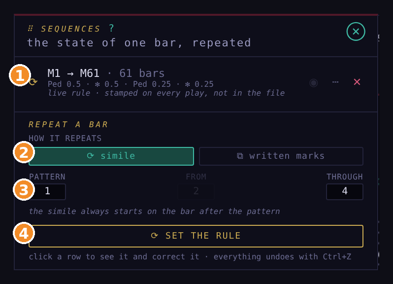
Pour faire une séquence :
- Placez le curseur sur la mesure qui sert de modèle, ou sélectionnez tout le passage.
- Appuyez sur SEQ dans la barre du haut. Le modèle arrive déjà avec la mesure où vous êtes.
- Choisissez comment elle se répète ② : ⟳ simile ou ⧉ written marks.
- Vérifiez PATTERN, FROM et THROUGH ③ et appuyez sur le bouton ④.
- ⟳ simile est une règle vivante : elle n’écrit aucune marque, le Score la répète à chaque lecture. Elle s’accroche à la Ped de la mesure modèle : cette mesure doit donc avoir de la pédale.
- ⧉ written marks écrit de vraies marques dans chaque mesure, que vous pouvez ensuite modifier une par une.
Pour corriger une séquence : cliquez sur sa ligne ①. La vue va à sa mesure et ses valeurs descendent dans les cases ; changez ce que vous voulez et appuyez sur le bouton. La ✕ la supprime. Tout s’annule avec Ctrl+Z.
Elle s’ouvre aussi depuis la sélection : clic droit dessus → Open sequence…
Comment savoir que c’est réussi : la séquence apparaît dans la liste avec son passage (par exemple M1 → M61), et à la lecture on l’entend sur tout le passage.
Toute l’explication est dans Les séquences : l’état d’une mesure, répété.
Re-value · diviser par deux les valeurs de note d’un passage
Depuis le menu de la sélection. Change toutes les valeurs de note de la sélection d’une durée à une autre — des croches en doubles croches, par exemple — sans que vous ayez à réécrire le passage.
Accords à deux valeurs (2026-09-25). Une pièce qui arrive du MIDI peut contenir des accords avec une noire parmi des croches — la voix qui était tenue. RE-VALUE les ignorait (« 0 re-valued ») parce qu’il exigeait que tout l’accord soit de la valeur FROM ; désormais, il agit sur les têtes qui sont FROM et laisse les autres, de sorte que FROM 1/4 → 1/8 rend l’accord uniforme. Et en raccourcissant, il n’écrit pas de silences là où quelque chose sonne déjà.
Select · les actions de sélection, bien en vue
Clic droit sur ◻ SELECT. La même chose que le menu de la sélection, mais sans avoir à sélectionner d’abord : sélectionner tout le canal ou tous les canaux, et de là copier, transposer, enregistrer la section, ou supprimer en refermant le vide.
Modifier une section · corriger une reprise déjà faite
Depuis novembre 2026, une reprise se corrige dans Repeats, le même popup qui la crée : clic droit sur sa zone ombrée, sur sa barre ‖: ou :‖, ou sur l’une de ses fins. Voir comment la corriger.
Modifier une volta · la fin alternative qui couvre d’autres mesures
Les fins se corrigent avec leur reprise, dans Repeats : clic droit sur le crochet et elles apparaissent toutes, chacune sur sa ligne — M (de quelle mesure à quelle mesure), Beat (vide = la mesure entière) et Pass (la 1re coche le passage 1 ; la 2e coche last, le dernier passage).
Plage de travail · vous enfermer dans vingt mesures
Clic droit sur l’affichage des mesures. Déclarez entre quelles mesures vous travaillez et le reste de la pièce cesse de vous gêner. Un clic l’efface quand vous voulez retrouver toute la pièce.
Regroupement des canaux · deux flûtes sur une portée
La poignée ☰ dans la ligne du canal, dans le panneau des canaux. Indiquez si ce canal a sa propre portée ou en partage une — deux flûtes sur une portée, les cordes avec leur accolade —, donnez un nom au groupe, et indiquez s’il s’agit de percussion.
Pulse · le métronome pour écrire avec la pulsation en marche
La pulsation est le battement régulier de la musique, celui que vous marquez du pied. PULSE vous la montre par une lumière pendant que vous écrivez, pour que vous sentiez où tombe chaque temps.
Pour l’ouvrir : appuyez sur ♩ PULSE ①, en bas à droite.

- La lumière ② : elle bat avec la pulsation. Chaque temps est marqué plus fort que ses subdivisions.
- ▶ start ③ l’allume ; le même bouton affiche ■ stop pour l’éteindre.
- Tempo ④ : il ne se choisit pas ici. Il est lu dans la partition, à la mesure où se trouve le curseur. Pour le changer, utilisez TEMPO ou la puce BPM de la barre du bas.
- Subdiv ⑤ : la lumière bat autant de fois par temps que l’indique SUBDIV, et à côté vous voyez la figure. Avec 4, elle bat en doubles croches.
Le PULSE du Score n’est que de la lumière, sans son. Si vous voulez entendre un clic, ou choisir vous-même le tempo, utilisez le pulse du Keyboard.
Comment savoir que c’est réussi : la lumière bat et le bouton affiche ■ stop. Si vous placez le curseur dans une mesure avec un autre tempo, la lumière change de vitesse.
Note suivante · écrire une appoggiature
Bouton Gr de la bande. Réglez-le sur acciaccatura ou appoggiature et la prochaine note que vous écrivez sort comme note d’agrément ; désactivez-le et tout redevient normal.
Armer un n-olet · trois dans le temps de deux
Bouton Tu de la bande. Indiquez combien de notes entrent dans le temps de combien, s’il porte crochet et chiffre, et de quel côté. Il s’applique aussi à une sélection déjà écrite, ou s’annule avec UNTUPLET.
Depuis l’éditeur de note (2026-09-26). L’éditeur de note (clic droit sur une note) a une nouvelle rangée sous RE-VALUE : ³ TUPLET · open →. Elle ouvre cette même fenêtre — celle qu’ouvrent aussi Numpad *, le Tu de la bande et le ³ TUPLET du DUR — à côté de l’éditeur de note, là où vous pouvez la voir, et non plus cachée derrière le clavier. Si la note appartient à un n-olet, la fenêtre s’ouvre avec les valeurs de son groupe.

Mineur · naturel, harmonique ou mélodique
Le bouton du mode mineur. Change la gamme qu’utilise le clavier par degrés : naturelle, harmonique avec sa septième haussée, ou mélodique.
La fenêtre du Coach · où apparaissent les explications
Touche ?, ou le 🎓. C’est la fenêtre où apparaissent les leçons, les avertissements et l’explication de chaque signe d’aide. Elle reste épinglée pendant que vous lisez, empile les messages au lieu de les écraser, et a sa propre taille de police.
Questions d’édition, résolues.
Des questions apparues en éditant le Rondo alla Turca de Mozart (KV 331, 3e mouvement), avec la réponse qui a fonctionné. Elles valent pour toute œuvre qui pose les mêmes problèmes.
Une mesure de 1/4 au milieu de l’œuvre
La question : la section a commencé par une anacrouse et se termine par une mesure d’un seul temps (la M96 du Rondo). Comment l’écrire sans inventer de cases ni renuméroter ? La réponse : clic droit sur la barre précédente, et dans le popup ⠿ Barline, ligne Time, choisissez Hidden. Le chiffre 1/4 n’est pas imprimé et ne prend pas de place, la mesure garde sa durée et la numérotation reste la même.
Le trille court de trois notes
La question : aux mesures 23 et 87 il y a un « tr » qui se joue si–do–si. Avec le trille, une ligne ondulée apparaît, cela sonne comme un trille long, et l’option « tr » n’apparaît pas. La réponse : c’est un mordant, pas un trille. Placez un mordant supérieur depuis ART, ouvrez-le par un clic droit et sous Sign choisissez tr : il s’imprime « tr » sans ligne et sonne note principale, voisine, principale. Cette option se trouve dans l’éditeur du mordant ; l’éditeur du trille ne l’a pas.
La liaison d’un groupe d’appoggiatures
La question : à la main gauche, chaque accord arrive avec trois petites notes (la–do♯–mi, puis la). D’où à où va la liaison ? La réponse : de la première petite note à la dernière, comme dans l’édition imprimée : on la joue vers la note réelle, mais on l’écrit ainsi. Une seule liaison par groupe ; s’il en reste une sur une petite note du milieu, retirez-la.
Donner de l’air aux petites notes
La question : les trois petites notes sont serrées et la liaison se voit à peine. La réponse : Shift + glisser déplace chaque petite note vers la gauche sans toucher au temps. Dans une mesure normale, il en faut peu — la première un peu plus que la deuxième, la troisième presque rien — : trop écartées, la première heurte la croche qui précède. Ce n’est que là où il reste de la place, comme après une mesure courte, qu’on peut les écarter davantage.
Join relie les croches de la mesure précédente
La question : à la M23, j’ai voulu relier des croches avec Join, et ce sont celles de la M22 qui ont été reliées. La réponse : avec le Beam editor ouvert et épinglé, un simple clic sur une note ne le fait pas changer de groupe : il continue de viser le précédent. Sélectionnez les notes avec Alt + clic, ou ouvrez l’éditeur par un clic droit sur une note de la mesure que vous voulez relier.
D’un fichier MIDI à votre copie, note par note.
Le Player ouvre un .mid (ou un .mmf), le dessine sur le Score Roll et laisse le copiste corriger chaque note dans le réseau pythagoricien avant de l’enregistrer en MMF. Les signes ? du Player vous amènent ici.
Plusieurs fichiers, une œuvre · les mouvements
Le Player réunit des mouvements de deux façons. Plusieurs fichiers MIDI à la fois : sélectionnez-les ensemble dans l’explorateur de fichiers (ou déposez-les ensemble sur la zone de dépôt) et chaque fichier entre comme un mouvement de la même œuvre, l’un après l’autre — c’est ainsi, par exemple, que l’on assemble les Sinfonias de Bach qui arrivent en fichiers séparés. L’ordre est celui des noms de fichier, avec les nombres lus correctement (2 avant 10) : numérotez-les dans l’ordre où vous voulez qu’ils soient joués. Un seul fichier MIDI contenant plusieurs pièces — les Danses roumaines de Bartók, en un seul fichier — : le Player reconnaît la mesure vide qui les sépare et la conserve comme frontière entre les pièces ; quand le .mmf est ouvert dans le Score, chaque pièce commence après une double barre. Avec une œuvre déjà chargée, déposer un fichier MIDI de plus l’ajoute à la fin comme un autre mouvement, y compris après que vous avez corrigé des notes avec le copiste ou ouvert l’œuvre depuis un .mmf : vos corrections sont conservées. Pour retirer un mouvement, faites un clic droit dessus. SAVE MMF enregistre tout dans un seul .mmf, avec ses mouvements ; MOVEMENT, au-dessus du rouleau, n’affiche que celui qui joue. Un .mmf ne se mélange pas : si le premier des fichiers est un .mmf, seul celui-ci s’ouvre.
Ce que le MIDI transporte et ce qu’il ne transporte pas · un MIDI propre depuis Finale
Un fichier MIDI enregistre comment la musique sonne, et non comment elle s’écrit, et le copiste reconstruit la partition à partir de cela. Le tempo écrit est repris même si le fichier porte d’abord le tempo de lecture du logiciel (c’est le dernier qui l’emporte) ; les pistes sans nom (« [Group 2] », « Track 0 ») reçoivent le nom de leur instrument ; une note que le logiciel refrappe alors qu’elle sonne encore n’est plus perdue. Les ornements sont déduits du son : deux notes d’agrément qui mènent à une note de triolet s’écrivent comme notes d’agrément, et en musique binaire la même figure s’écrit comme un mordant, car elles sonnent de la même façon. Pour l’écriture exacte — ornements, reprises, points d’orgue — ouvrez le MusicXML.
Un MIDI propre depuis Finale : Human Playback réglé sur None avant l’export ; si la partition est née d’un MIDI importé, effacez les durées avec le MIDI Tool (Duration → Clear), car Finale garde combien de temps chaque touche a sonné et le MIDI exporté le répète ; et dans la barre de lecture, le tempo propre de la partition. Le titre : un fichier MIDI ne porte ni titre ni compositeur ; si vous identifiez l’œuvre avec Score Intelligence, la fiche les remplit, et le Score les reprend avec l’indication de tempo. Sans fiche, l’œuvre porte le nom du fichier.
Comment lire le Score Roll
Le Score Roll, c’est l’œuvre dessinée : chaque note est un petit trait. Le temps va de gauche à droite ; de bas en haut, les notes vont du grave à l’aigu. Et chaque trait peut être cliqué avec la souris pour savoir quelle note c’est et la corriger.
Pour le voir : ouvrez le Player avec le bouton ⊞ player (il se trouve dans le Score, le Keyboard, la Console et la fenêtre Coach) et chargez un .mid ou un .mmf dans LOAD. Le Score Roll le dessine aussitôt.

- Un trait est une note ① : sa longueur est sa durée, sa hauteur est la note jouée et sa couleur est la piste (au piano, une main par couleur). Une note répétée — les croches d’un accompagnement — apparaît comme une rangée de traits, un par attaque.
- Les lignes verticales ② sont les barres de mesure, numérotées en bas comme dans la partition. Si l’œuvre commence par une anacrouse, cette mesure est la mesure 0.
- Le curseur ③ indique où en est la musique. Un clic sur un endroit vide l’y amène ; faites glisser son ▼ pour parcourir l’œuvre.
- L’horloge ④ indique le temps, la mesure:temps et la durée totale.
- ŒUVRE et MOUVEMENT ⑤ choisissent ce que vous voyez : toute l’œuvre ou un seul mouvement. EXPORTER ⑥ enregistre une partie (voir ⭳ export).
Les traits sont petits : pour en cliquer un avec la souris, agrandissez d’abord avec Ctrl + molette sur le roll (voir Se déplacer dans le rouleau).
Comment savoir que c’est réussi : quand vous appuyez sur ▶, le curseur avance et les traits qu’il croise sont les notes que vous entendez.
Le copiste · cliquer une note pour savoir ce qu’elle est et la corriger
Un fichier MIDI garde comment la musique a sonné, pas comment elle s’écrit. Le copiste est la fenêtre qui vous dit quelle note est chaque trait et vous permet de la corriger : son nom, sa hauteur, sa durée et la force avec laquelle elle sonne.
Pour l’ouvrir : cliquez sur un trait ① du Score Roll. La fenêtre NOTE · CORRECTION DU COPISTE s’ouvre et le trait est entouré d’un cadre.

- Le nom ② : la note avec son octave (Ré4 est le Ré juste au-dessus du Do central du piano). À côté, sa place dans le réseau pythagoricien [quintes, octaves] et sa fréquence en Hz. En dessous : la piste, l’instrument, quand elle sonne et combien de temps.
- HAUTEUR ③ : les + montent et les − descendent. T = un ton. L = limma, le demi-ton qui change la lettre (Do → Si). A = apotome, le demi-ton qui garde la lettre et ajoute l’altération (Ré → Ré♯). K = un comma : la note voisine par comma (La♭ +K = Sol♯).
- OCTAVE ④ : −8va et +8va déplacent la note d’une octave vers le bas ou vers le haut.
- ORTHOGRAPHE ⑤ : ♯↔♭ échange La♯ contre Si♭ (ou l’inverse). En accord pythagoricien ce sont deux notes différentes, séparées d’un comma : choisissez celle que la musique demande.
- ♪ écouter ⑥ joue la note seule. ✕ supprimer la retire de la copie (un MIDI apporte parfois des notes en trop).
- DURÉE ⑦ : ÷2 la moitié, ×2 le double, −10% et +10% pour les réglages fins. l.v. = laisser vibrer : la note ne s’éteint pas.
- VELOCITY ⑧ : la force avec laquelle la note sonne, de 1 (très doux) à 127 (très fort).
Pour corriger beaucoup de notes à la fois : Maj + glisser sur le roll prend tout un passage et lui applique la même chose. La fenêtre se ferme avec ⊗.
Comment savoir que c’est réussi : chaque changement sonne aussitôt, le nom se met à jour et le mot modifié apparaît. La correction voyage dans le MMF quand vous l’enregistrez.
Se déplacer dans le rouleau
Ctrl + molette zoome ou dézoome autour du curseur. Une fois le zoom fait : molette = monter et descendre dans les hauteurs · Shift + molette = avancer et reculer dans le temps · faire glisser le fond = déplacer la vue. Avec toute la pièce affichée, la molette n’a nulle part où aller : zoomez d’abord. Un double-clic dans un endroit vide ramène à toute la pièce ; WORK et MOVEMENT, en haut, choisissent ce qui est affiché. Un clic dans un espace vide y déplace le curseur ; faites glisser le ▼ du curseur pour parcourir la pièce.
La boucle A–B · clic droit
Clic droit sur le rouleau : Set A here et Set B here. La section est ombrée et le transport la fait tourner en boucle. Faites glisser les drapeaux A et B pour les ajuster ; clear A–B pins les supprime. Pour marquer exactement sur une barre de mesure, zoomez d’abord avec Ctrl + molette.
⭳ export · enregistrer par parties
Le bouton ⭳ export de l’en-tête du rouleau ouvre trois chemins. Export by instrument… : cochez les pistes voulues (par exemple, une seule main) et l’étendue : Work, Visible range ou A–B section (affichée lorsque des repères A et B existent). Export selection : les notes choisies avec Shift + glisser. Export A–B section : toutes les pistes entre A et B. split voices sépare un canal polyphonique en voix aiguë, médiane et grave. Chaque chemin télécharge un .mmf.